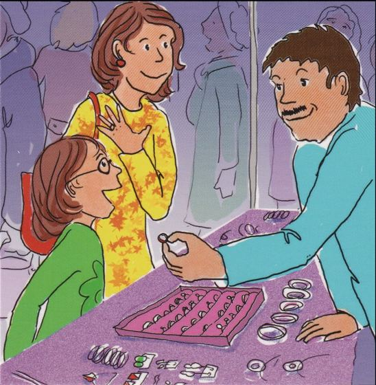

<!doctype html>
<html lang="ru">
<head>
<meta charset="utf-8">
<meta name="viewport" content="width=device-width,initial-scale=1,viewport-fit=cover">
<title>Самооценка и картинки</title>
<link rel="stylesheet" href="https://fonts.googleapis.com/css2?family=Onest:wght@500;700&family=Golos+Text:wght@400;500;600&family=JetBrains+Mono:wght@400;600&display=swap">
<style>
/* Layout: one working sheet in the centre; the scale is the hero, instructions sit beside it, psychologist's tools fold below */
:root{
  --bg:#f4f5f8; --sheet:#ffffff; --fg:#1b2130; --muted:#5d6577; --line:#d9dce5; --graphite:#2a3040;
  --ink:#2f4fd8; --ink-soft:#e7ebfd; --ok:#1f8a5b; --warn:#b85a12; --warn-soft:#fbeee2; --band:#eef0f5;
  --f-display:"Onest","Golos Text",system-ui,sans-serif; --f-body:"Golos Text",system-ui,sans-serif; --f-mono:"JetBrains Mono",ui-monospace,monospace;
}
@media (prefers-color-scheme:dark){:root:not([data-theme="light"]){
  --bg:#11141b; --sheet:#181c25; --fg:#e7eaf1; --muted:#9aa2b4; --line:#2e3442; --graphite:#c9cfdc;
  --ink:#8fa3ff; --ink-soft:#232b4d; --ok:#5fd09c; --warn:#f0a35f; --warn-soft:#3a2a1c; --band:#1e2330; color-scheme:dark}}
:root[data-theme="dark"]{
  --bg:#11141b; --sheet:#181c25; --fg:#e7eaf1; --muted:#9aa2b4; --line:#2e3442; --graphite:#c9cfdc;
  --ink:#8fa3ff; --ink-soft:#232b4d; --ok:#5fd09c; --warn:#f0a35f; --warn-soft:#3a2a1c; --band:#1e2330; color-scheme:dark}
*{box-sizing:border-box}
html{padding-top:env(safe-area-inset-top,0px);padding-bottom:env(safe-area-inset-bottom,0px)}
body{margin:0}
img{max-width:100%}
[hidden]{display:none!important}
body{background:var(--bg);color:var(--fg);font:15px/1.55 var(--f-body);padding-left:max(16px,env(safe-area-inset-left,0px));padding-right:max(16px,env(safe-area-inset-right,0px));padding-block:20px 48px}
.wrap{max-width:1120px;margin:0 auto;display:flex;flex-direction:column;gap:20px}
h1,h2,h3{font-family:var(--f-display);text-wrap:balance;margin:0;line-height:1.2}
h1{font-size:1.7rem;font-weight:700}
h2{font-size:1.25rem;font-weight:700}
h3{font-size:1rem;font-weight:700}
p{margin:0}
.eyebrow{font:600 .72rem var(--f-mono);letter-spacing:.08em;text-transform:uppercase;color:var(--muted)}
.sheet{background:var(--sheet);border:1px solid var(--line);border-radius:10px;padding:20px;display:flex;flex-direction:column;gap:16px}
.muted{color:var(--muted)}
.row{display:flex;gap:10px;flex-wrap:wrap;align-items:center}
label.f{display:flex;flex-direction:column;gap:4px;font-size:.85rem;color:var(--muted);min-width:0}
input[type=text],input[type=number],input[type=date],textarea,select{font:inherit;color:var(--fg);background:var(--sheet);border:1px solid var(--line);border-radius:6px;padding:7px 9px;width:100%;min-width:0}
textarea{min-height:70px;resize:vertical}
input:focus-visible,textarea:focus-visible,select:focus-visible,button:focus-visible,svg:focus-visible{outline:2px solid var(--ink);outline-offset:2px}
button{font:500 .95rem var(--f-body);cursor:pointer;border-radius:6px;padding:8px 14px;border:1px solid var(--line);background:var(--sheet);color:var(--fg)}
button:hover{border-color:var(--graphite)}
button.primary{background:var(--ink);border-color:var(--ink);color:var(--sheet)}
button.primary:disabled{opacity:.4;cursor:default}
button.ghost{border-color:transparent;background:transparent;color:var(--muted);padding:6px 8px}
button.chip{border-radius:999px;padding:5px 12px;font-size:.85rem}
.grid3{display:grid;grid-template-columns:repeat(auto-fit,minmax(160px,1fr));gap:12px}
/* scale editor */
.scales{display:flex;flex-direction:column;gap:8px}
.srow{display:grid;grid-template-columns:28px 1.1fr 1.6fr 1.6fr 150px auto;gap:8px;align-items:end;padding:10px;border:1px solid var(--line);border-radius:8px}
.srow .n{font:600 .85rem var(--f-mono);color:var(--muted);padding-bottom:9px}
.srow .tools{display:flex;gap:2px}
@media (max-width:760px){.srow{grid-template-columns:1fr 1fr}.srow .n{grid-column:1/-1;padding:0}.srow .wide{grid-column:1/-1}}
/* run */
.run{display:grid;grid-template-columns:minmax(0,1fr) minmax(0,1fr);gap:20px;align-items:start}
@media (max-width:760px){.run{grid-template-columns:1fr}}
.scalebox{display:flex;flex-direction:column;align-items:center;gap:6px;text-align:center}
.pole{font:500 .95rem var(--f-body);max-width:28ch}
.pole small{display:block;font:600 .68rem var(--f-mono);letter-spacing:.08em;text-transform:uppercase;color:var(--muted)}
#mark{width:100%;height:auto;touch-action:none;cursor:crosshair;display:block;min-width:0}
.scalerow{display:grid;grid-template-columns:minmax(70px,210px) minmax(0,1fr) minmax(70px,210px);gap:14px;align-items:center}
.scalerow .pole{font-size:1rem;line-height:1.3;max-width:none}
.scalerow .l{text-align:right}
.scalerow .r{text-align:left}
@media (max-width:560px){.scalerow{gap:6px}.scalerow .pole{font-size:.78rem}}
.miss{min-height:1.4em;text-align:center;color:var(--warn);font-size:.95rem}
.runsheet{gap:22px;padding:24px}
.poles{display:flex;justify-content:space-between;gap:24px;margin-top:-8px}
.poles .pole{max-width:40%;font-size:1rem}
.poles .r{text-align:right}
button.big{padding:12px 34px;font-size:1.05rem}
.runsheet .instr{font-size:clamp(1.1rem,2.2vw,1.4rem);max-width:44ch;margin:0;min-height:4.4em;display:flex;align-items:center}
.instrrow{display:flex;gap:20px;align-items:center;justify-content:center}
.ex{flex:none;display:flex;flex-direction:column;align-items:center;gap:2px;padding:6px 8px;border:1px dashed var(--line);border-radius:8px}
.ex svg{width:77px;height:63px;display:block}
.ex span{font:600 .66rem var(--f-mono);letter-spacing:.08em;text-transform:uppercase;color:var(--muted)}
@media (max-width:560px){.instrrow{gap:12px}.ex svg{width:56px;height:46px}}
.steps{display:flex;flex-direction:column;gap:8px}
.step{display:flex;gap:12px;align-items:center;padding:10px 12px;border:1px solid var(--line);border-radius:8px;color:var(--muted)}
.step svg{flex:none}
.step.now{border-color:var(--ink);background:var(--ink-soft);color:var(--fg)}
.step.done{color:var(--fg)}
.instr{font:500 1.15rem/1.45 var(--f-display)}
details.psy{border:1px dashed var(--line);border-radius:8px;padding:10px 12px}
details.psy summary{cursor:pointer;font-weight:600;color:var(--muted)}
details.psy[open]{display:flex;flex-direction:column;gap:10px}
details.psy[open] > *:not(summary){margin-top:10px}
.hint{background:var(--warn-soft);border-radius:6px;padding:8px 10px;font-size:.9rem}
.progress{display:flex;gap:4px}
.progress i{flex:1;height:4px;border-radius:2px;background:var(--line)}
.progress i.on{background:var(--ink)}
/* results */
.profile{overflow-x:auto;border:1px solid var(--line);border-radius:8px;background:var(--sheet)}
.legend{display:flex;gap:18px;flex-wrap:wrap;font-size:.88rem;color:var(--muted)}
.legend span{display:flex;align-items:center;gap:6px}
.cards{display:grid;grid-template-columns:repeat(auto-fit,minmax(200px,1fr));gap:12px}
.card{border:1px solid var(--line);border-radius:8px;padding:12px;display:flex;flex-direction:column;gap:4px}
.card b{font:700 1.05rem var(--f-display)}
.find{display:flex;flex-direction:column;gap:10px}
.fi{display:grid;grid-template-columns:auto 1fr;gap:10px;padding:10px 12px;border-radius:8px;border:1px solid var(--line)}
.fi.comp{border-color:var(--warn);background:var(--warn-soft)}
.tag{font:600 .7rem var(--f-mono);padding:3px 7px;border-radius:4px;background:var(--band);color:var(--muted);height:fit-content;white-space:nowrap}
.fi.comp .tag{background:var(--warn);color:var(--sheet)}
.tblw{overflow-x:auto}
table{border-collapse:collapse;width:100%;font-size:.9rem}
th,td{text-align:left;padding:7px 8px;border-bottom:1px solid var(--line);vertical-align:top}
th{font:600 .72rem var(--f-mono);text-transform:uppercase;letter-spacing:.06em;color:var(--muted)}
td.num{font-family:var(--f-mono);font-variant-numeric:tabular-nums;white-space:nowrap}
.note{font-size:.85rem;color:var(--muted)}
@media (prefers-reduced-motion:no-preference){.mk{transition:transform .08s}}
/* home */
.methods{display:grid;grid-template-columns:repeat(auto-fit,minmax(min(100%,420px),1fr));gap:16px}
.method{gap:12px}
.status{font:600 .72rem var(--f-mono);letter-spacing:.04em;padding:4px 9px;border-radius:999px;background:var(--band);color:var(--muted);white-space:nowrap}
.status.ok{background:var(--ok);color:var(--sheet)}
.status.mid{background:var(--ink-soft);color:var(--ink)}
.mthumbs{display:grid;grid-template-columns:repeat(5,minmax(0,1fr));gap:6px}
.mthumbs img{width:100%;aspect-ratio:4/3;object-fit:contain;background:#fff;border:1px solid var(--line);border-radius:4px}
/* pictures settings */
.gpicks{display:grid;grid-template-columns:repeat(auto-fill,minmax(190px,1fr));gap:12px}
.gpick{display:flex;flex-direction:column;gap:6px;border:1px solid var(--line);border-radius:8px;padding:8px}
.gpick.off{opacity:.45}
.gthumb{position:relative;display:block;cursor:pointer;background:#fff;border-radius:4px;overflow:hidden;aspect-ratio:4/3}
.gthumb img{width:100%;height:100%;object-fit:contain;display:block}
.gthumb input{position:absolute;top:6px;left:6px;width:18px;height:18px;accent-color:var(--ink)}
/* board: one screen, no scroll */
body.board{overflow:hidden;padding-block:8px}
#app.boardwrap{max-width:none;height:calc(100dvh - 16px - env(safe-area-inset-top,0px) - env(safe-area-inset-bottom,0px));gap:8px}
.gtop{display:flex;justify-content:space-between;align-items:center;gap:10px}
.gtabs{display:flex;gap:4px;overflow-x:auto;min-width:0;padding:2px}
.gtab{white-space:nowrap;border-radius:999px;padding:6px 14px}
.gtab.on{background:var(--ink);border-color:var(--ink);color:var(--sheet)}
.gtab i{display:inline-block;width:7px;height:7px;border-radius:50%;background:var(--ok);margin-left:7px;vertical-align:middle}
.gboard{flex:1;min-height:0;display:grid;grid-template-columns:auto minmax(0,1fr);gap:10px}
.gtools{display:flex;flex-direction:column;gap:10px;background:var(--sheet);border:1px solid var(--line);border-radius:10px;padding:8px;overflow-y:auto;min-height:0}
.tgroup{display:flex;flex-direction:column;gap:2px}
.tgroup.sw{display:grid;grid-template-columns:repeat(3,30px);gap:6px;justify-content:center}
.tgroup.sizes{flex-direction:row;justify-content:center;gap:4px}
.tool{display:flex;align-items:center;gap:8px;padding:5px 10px;border-color:transparent;background:transparent;font-size:.88rem;text-align:left}
.tool.on{background:var(--ink-soft);border-color:var(--ink);color:var(--fg)}
.swatch{width:30px;height:30px;padding:0;border-radius:50%;background:var(--c);border:2px solid var(--sheet);box-shadow:0 0 0 1px var(--line)}
.swatch.on{box-shadow:0 0 0 2.5px var(--ink)}
.size{display:flex;align-items:center;justify-content:center;width:42px;height:42px;padding:0;border-color:transparent;background:transparent}
.size i{display:block;border-radius:50%}
.size.on{background:var(--ink-soft);border-color:var(--ink)}
.gstage{position:relative;min-width:0;min-height:0;display:flex;align-items:center;justify-content:center;overflow:hidden}
.gpic{position:relative;background:#fff;border:1px solid var(--line);border-radius:6px;overflow:hidden;touch-action:none;user-select:none;-webkit-user-select:none;flex:none}
.gpic img{position:absolute;inset:0;width:100%;height:100%;pointer-events:none}
.gpic canvas{position:absolute;inset:0;mix-blend-mode:multiply}
#glive{cursor:none}
.gpic[data-tool="fill"] #glive{cursor:crosshair}
#gcur{position:absolute;left:0;top:0;border-radius:50%;pointer-events:none;border:1px solid rgba(0,0,0,.75);box-shadow:0 0 0 1px rgba(255,255,255,.9)}
.gside{position:absolute;top:0;right:0;bottom:0;width:min(360px,92%);background:var(--sheet);border:1px solid var(--line);border-radius:10px;padding:12px;display:flex;flex-direction:column;gap:8px;box-shadow:0 10px 30px rgba(0,0,0,.18);z-index:5}
.gside textarea{flex:1;min-height:120px}
@media (max-width:760px){.gboard{grid-template-columns:1fr;grid-template-rows:auto minmax(0,1fr)}.gtools{flex-direction:row;overflow-x:auto;overflow-y:hidden}.tgroup{flex-direction:row}.tgroup.sw{display:flex}.tool span{display:none}.gtop{flex-wrap:wrap}}

/* screening: shared */
.mthumbs.tall{grid-template-columns:repeat(4,minmax(0,1fr))}
.mthumbs.tall img{aspect-ratio:3/4}
.qthumb{display:flex;align-items:center;justify-content:center;aspect-ratio:4/3;border:2px dashed var(--ink);border-radius:4px;color:var(--ink);font:700 1.2rem var(--f-display)}
.sotop{display:grid;grid-template-columns:auto minmax(0,1fr) auto;gap:14px;align-items:center}
.sprog{display:flex;flex-direction:column;gap:6px;min-width:0}
.shint{text-align:center;color:var(--muted);font:500 1rem var(--f-display);margin:0}
.shint.nudge{animation:nudge .5s}
@keyframes nudge{0%,100%{transform:none}25%{transform:translateX(-6px)}75%{transform:translateX(6px)}}
/* social */
.sostage{flex:1;min-height:0;display:flex;flex-direction:column;justify-content:center;gap:12px;--s:160px}
.stimrow{display:grid;grid-template-columns:repeat(var(--cols,5),var(--s));gap:12px;justify-content:center}
.sframe{position:relative;width:var(--s);height:var(--s);background:#fff;border:1px solid var(--line);border-radius:8px;overflow:hidden}
.sframe img{width:100%;height:100%;object-fit:contain;display:block}
.sframe .badge{position:absolute;left:6px;top:6px;font:600 .72rem var(--f-mono);background:var(--graphite);color:var(--sheet);border-radius:4px;padding:1px 6px;pointer-events:none}
.sframe.gap{border:2.5px dashed var(--ink);background:var(--ink-soft);display:flex;align-items:center;justify-content:center;transition:transform .12s,box-shadow .12s}
.sframe.gap .qmark{font:700 calc(var(--s) * .35) var(--f-display);color:var(--ink)}
.sframe.gap.filled{border-style:solid;background:#fff}
.sframe.gap.filled .qmark{display:none}
.sframe.gap.hot{transform:scale(1.04);box-shadow:0 0 0 5px var(--ink-soft)}
.sframe.gap .scard{position:absolute;inset:0;width:auto;height:auto;border:0;border-radius:0}
.ansrow{display:grid;grid-template-columns:repeat(4,var(--s));gap:12px;justify-content:center;padding-top:12px;border-top:1px dashed var(--line)}
.sslot{width:var(--s);height:var(--s);border-radius:8px;background:var(--band);border:1.5px dashed var(--line)}
.scard{width:100%;height:100%;background:#fff;border:1.5px solid var(--line);border-radius:8px;overflow:hidden;cursor:grab;touch-action:none;user-select:none;-webkit-user-select:none}
.scard:hover{border-color:var(--ink)}
.scard:focus-visible{outline:3px solid var(--ink);outline-offset:2px}
.scard img{width:100%;height:100%;object-fit:contain;display:block;pointer-events:none}
.scard.lifted{opacity:.25}
.sdragging{position:fixed;left:0;top:0;z-index:100;pointer-events:none;background:#fff;border:2px solid var(--ink);border-radius:8px;overflow:hidden;box-shadow:0 14px 30px rgba(0,0,0,.25)}
.sdragging img{width:100%;height:100%;object-fit:contain;display:block}
@media (max-width:760px){.ansrow{grid-template-columns:repeat(4,minmax(0,var(--s)))}.sslot{width:auto;aspect-ratio:1;height:auto}}
/* emotional */
.pstage{flex:1;min-height:0;position:relative}
.pairs-board{position:relative;width:100%;border:1px solid var(--line);border-radius:10px;background-color:#fbfcfd;background-image:linear-gradient(rgba(38,40,44,.045) 1px,transparent 1px),linear-gradient(90deg,rgba(38,40,44,.045) 1px,transparent 1px);background-size:32px 32px;overflow:hidden;touch-action:none;user-select:none;-webkit-user-select:none;transition:height .35s ease}
.fig{position:absolute;left:0;top:0;z-index:2;cursor:grab;touch-action:none;transition:left .42s cubic-bezier(.25,1.2,.4,1),top .42s cubic-bezier(.25,1.2,.4,1),width .3s,height .3s,filter .15s,transform .15s;outline:none}
.fig img{width:100%;height:100%;object-fit:contain;object-position:center bottom;display:block;pointer-events:none}
.fig:hover,.fig:focus-visible{filter:drop-shadow(0 0 3px rgba(47,79,216,.8))}
.fig.selected{filter:drop-shadow(0 0 4px #2f4fd8);transform:translateY(-6px)}
.fig.dragging{transition:filter .15s,transform .15s;z-index:50;cursor:grabbing;transform:scale(1.04);filter:drop-shadow(0 10px 14px rgba(38,40,44,.25))}
.fig.target{filter:drop-shadow(0 0 5px #1f8a5b) drop-shadow(0 0 2px #1f8a5b)}
.pair-frame{position:absolute;z-index:1;border:2.5px solid #3a3d42;border-radius:16px;background:rgba(255,255,255,.88);box-shadow:0 4px 14px rgba(38,40,44,.08);transition:left .42s cubic-bezier(.25,1.2,.4,1),top .42s cubic-bezier(.25,1.2,.4,1),width .3s,height .3s;pointer-events:none}
.pair-frame.ghost{border:2.5px dashed #1f8a5b;background:rgba(31,138,91,.05);box-shadow:none;transition:none}
.pair-tools{position:absolute;z-index:5;display:flex;gap:4px;padding:3px;border-radius:999px;background:#fff;transition:left .42s cubic-bezier(.25,1.2,.4,1),top .42s cubic-bezier(.25,1.2,.4,1)}
.pair-tools button{width:30px;height:30px;border-radius:50%;border:1.5px solid #c9d3d7;background:#fff;color:#444;font-size:15px;font-weight:700;line-height:1;padding:0;display:flex;align-items:center;justify-content:center}
.pairs-board.no-anim .fig,.pairs-board.no-anim .pair-frame,.pairs-board.no-anim .pair-tools,.pairs-board.no-anim{transition:none!important}
@media (prefers-reduced-motion:reduce){.fig,.pair-frame,.pair-tools,.pairs-board{transition:none!important}}
.tfig{height:56px;width:auto;display:block}
.tcard{height:64px;width:64px;object-fit:contain;background:#fff;border:1px solid var(--line);border-radius:4px;display:block}
/* results */
.gres{display:grid;grid-template-columns:repeat(auto-fit,minmax(min(100%,440px),1fr));gap:16px}
.gshot{background:#fff;border:1px solid var(--line);border-radius:6px;overflow:hidden}
.gshot canvas{display:block;width:100%;height:auto}
.gnote{white-space:pre-wrap}

</style>
</head>
<body>


<div class="wrap" id="app"></div>

<script>
const KEY='dembo-rub-v1';
const I6=100/6;
const DEFAULTS=[
 {name:'Здоровье',top:'самый здоровый человек на свете',bottom:'самый больной человек на свете'},
 {name:'Ум',top:'самый умный человек на свете',bottom:'самый глупый человек на свете'},
 {name:'Характер',top:'человек с самым лучшим характером',bottom:'человек с самым плохим характером'},
 {name:'Счастье',top:'самый счастливый человек на свете',bottom:'самый несчастный человек на свете'},
 {name:'Удовлетворённость собой',top:'человек, полностью довольный собой',bottom:'человек, совсем недовольный собой',role:'sat'},
 {name:'Оптимизм',top:'самый большой оптимист — всегда ждёт хорошего',bottom:'самый большой пессимист — всегда ждёт плохого',role:'opt'}
];
const EXTRA=[
 {name:'Уверенность в себе',top:'самый уверенный в себе человек',bottom:'самый неуверенный в себе человек'},
 {name:'Доброта',top:'самый добрый человек на свете',bottom:'самый злой человек на свете'},
 {name:'Умение ладить с людьми',top:'лучше всех ладит с людьми',bottom:'совсем не умеет ладить с людьми'},
 {name:'Авторитет у сверстников',top:'самый уважаемый среди сверстников',bottom:'совсем неуважаемый среди сверстников'},
 {name:'Внешность',top:'самый красивый человек на свете',bottom:'самый некрасивый человек на свете'},
 {name:'Умелые руки',top:'человек с самыми умелыми руками',bottom:'человек с самыми неумелыми руками'}
];
let uid=0;const mkScale=s=>({id:'s'+Date.now().toString(36)+(uid++),name:s.name||'',top:s.top||'',bottom:s.bottom||'',role:s.role||'',note:'',m:{},st:{}});
function fresh(){return{phase:'setup',name:'',age:'',date:new Date().toISOString().slice(0,10),addr:'ty',others:false,scales:DEFAULTS.map(mkScale),idx:0,step:0,pass:'main',done:false,sid:''}}
let S;try{S=JSON.parse(localStorage.getItem(KEY))}catch(e){}
if(!S||!S.scales)S=fresh();
const save=()=>{try{localStorage.setItem(KEY,JSON.stringify(S))}catch(e){}};
const esc=t=>String(t??'').replace(/[&<>"]/g,c=>({'&':'&amp;','<':'&lt;','>':'&gt;','"':'&quot;'}[c]));
const $=q=>document.querySelector(q);
const ty=()=>S.addr==='ty';

/* ---------- glyphs ---------- */
const G={
 a:(x,y,k=1,c='var(--graphite)',h)=>h?`<line class="mk" x1="${x}" y1="${y-34*k}" x2="${x}" y2="${y+34*k}" stroke="${c}" stroke-width="${5*k}" stroke-linecap="round"/>`:`<line class="mk" x1="${x-34*k}" y1="${y}" x2="${x+34*k}" y2="${y}" stroke="${c}" stroke-width="${5*k}" stroke-linecap="round"/>`,
 i:(x,y,k=1,c='var(--ink)',h)=>{const a=7*k,q=8.5*k;return h?`<path class="mk" d="M${x},${y-34*k} q${-a*1.7},${q} 0,${2*q} t0,${2*q} t0,${2*q} t0,${2*q}" fill="none" stroke="${c}" stroke-width="${3.5*k}" stroke-linecap="round"/>`:`<path class="mk" d="M${x-34*k},${y} q${q},${-a*1.7} ${2*q},0 t${2*q},0 t${2*q},0 t${2*q},0" fill="none" stroke="${c}" stroke-width="${3.5*k}" stroke-linecap="round"/>`},
 p:(x,y,k=1,c='var(--ok)')=>`<path class="mk" d="M${x-13*k},${y-17*k} L${x},${y} L${x+13*k},${y-17*k}" fill="none" stroke="${c}" stroke-width="${3.5*k}" stroke-linecap="round" stroke-linejoin="round"/>`,
 o:(x,y,k=1,c='var(--warn)')=>`<path class="mk" d="M${x-10*k},${y-10*k} L${x+10*k},${y+10*k} M${x+10*k},${y-10*k} L${x-10*k},${y+10*k}" stroke="${c}" stroke-width="${3.5*k}" stroke-linecap="round"/>`
};
const icon=(k)=>`<svg width="34" height="34" viewBox="0 0 80 80" aria-hidden="true"><line x1="40" y1="6" x2="40" y2="74" stroke="var(--line)" stroke-width="3"/>${G[k](40,k==='p'?50:40,1.2)}</svg>`;
const MARK={a:'Чёрточка',i:'Волнистая линия',p:'Галочка',o:'Крестик'};
const MEAN={a:'актуальная самооценка',i:'идеальная самооценка («уровень мечты»)',p:'оценка своих возможностей',o:'как оценивают другие'};
function instr(k,s){
 const t=ty();
 return{
  a:t?'Отметь чёрточкой, где ты находишься сейчас — как ты сам это чувствуешь.':'Перечеркните шкалу в том месте, где вы сейчас находитесь — как вы сами это понимаете или чувствуете.',
  i:t?'Теперь отметь волнистой линией место, где ты хотел бы оказаться, — о чём мечтаешь.':'Теперь отметьте волнистой линией место, где вы мечтали бы оказаться.',
  p:t?'А теперь галочкой — то, чего ты реально сможешь достичь, если честно оценить свои возможности.':'Галочкой отметьте то, чего вы реально сможете достичь, объективно оценивая свои возможности.',
  o:t?'Отметь крестиком: каким тебя считают другие люди?':'Отметьте крестиком: каким (какой) вас считают другие?'
 }[k];
}

/* ---------- analysis ---------- */
const zone=v=>{if(Math.abs(v-50)<2)return 0;return v>50?Math.min(3,Math.ceil((v-50)/I6)):-Math.min(3,Math.ceil((50-v)/I6))};
const ZN={3:'чрезмерно высокая',2:'повышенная',1:'нормальная',0:'на середине шкалы','-1':'пониженная','-2':'выраженно пониженная','-3':'крайне низкая'};
const mean=a=>a.reduce((x,y)=>x+y,0)/(a.length||1);
const sd=a=>{const m=mean(a);return Math.sqrt(mean(a.map(x=>(x-m)**2)))};
const median=a=>{const b=[...a].sort((x,y)=>x-y),n=b.length;return n?(n%2?b[(n-1)/2]:(b[n/2-1]+b[n/2])/2):0};
const lvl=(v)=>v>=66.7?2:v>=48?1:0;
const LV=['низкая','средняя','высокая'];

function analyze(scales=S.scales){
 const all=scales.filter(s=>s.m.a!=null&&s.m.i!=null&&s.m.p!=null);
 let core=all.filter(s=>!s.role); if(core.length<2)core=all;
 const A=core.map(s=>s.m.a),Iv=core.map(s=>s.m.i),P=core.map(s=>s.m.p);
 const gaps=core.map(s=>Math.max(0,s.m.i-s.m.a));
 const R={n:all.length,core,findings:[],points:0};
 if(!core.length)return R;
 const mA=mean(A),mI=mean(Iv),mG=mean(gaps);
 R.height={v:mA,z:zone(mA)};
 const range=(Math.max(...A)-Math.min(...A))/I6;
 R.stab={range,label:range<=1.5?'устойчивая (равномерная)':range<3?'относительно неравномерная':'выраженно неравномерная'};
 // satisfaction (indirect)
 const gI=mG/I6; const satInd=gI<1?2:gI<=2?1:0; R.sat={gap:gI,ind:satInd};
 // optimism (indirect): share of reachable part of the gap
 const shares=core.filter(s=>s.m.i-s.m.a>1).map(s=>Math.max(0,Math.min(1,(s.m.p-s.m.a)/(s.m.i-s.m.a))));
 const sh=shares.length?mean(shares):null; const optInd=sh==null?null:sh>=.6?2:sh>=.35?1:0; R.opt={share:sh,ind:optInd};
 const satS=all.find(s=>s.role==='sat'),optS=all.find(s=>s.role==='opt');
 if(satS)R.sat.dir=lvl(satS.m.a); if(optS&&optInd!=null)R.opt.dir=lvl(optS.m.a);
 const F=(title,text,comp)=>{R.findings.push({title,text,comp});if(comp)R.points++};
 const names=a=>a.map(s=>'«'+s.name+'»').join(', ');

 // dips & peaks
 const dips=[],peaks=[];
 if(core.length>=3)core.forEach(s=>{const others=core.filter(o=>o!==s).map(o=>o.m.a);const d=(s.m.a-median(others))/I6;if(d<=-1)dips.push(s);if(d>=1&&zone(s.m.a)===3)peaks.push(s)});
 if(dips.length)F('Западение самооценки',`Отметка заметно ниже, чем по остальным шкалам: ${names(dips)}. Возможная проблемная зона — её стоит обсудить с испытуемым.`,false);
 // 1 partial compensation
 if(peaks.length&&dips.length)F('1. Частичная компенсаторная потеря критичности',`Пик в верхнем интервале (${names(peaks)}) на фоне западения (${names(dips)}). Похоже на «идеализацию»: чрезмерно высокая оценка по одной шкале прикрывает проблему по другой. Проверка: сомнение в пике часто вызывает защитную реакцию.`,true);
 // 2/3 compensatory lowering of ideal
 const sdG=sd(gaps)/I6;
 if(mA<50&&mI<83.3&&sdG<.6)F('2. Механизм борьбы с депрессией',`Идеальная самооценка снижена (в среднем ${mI.toFixed(0)}) и идёт «лентой» параллельно пониженной актуальной. Испытуемый снижает уровень мечты, чтобы чувствовать себя довольнее тем, что есть.`,true);
 if(mA>=66.7&&gI<.9&&mI<97)F('3. Общее компенсаторное повышение удовлетворённости собой',`При повышенной актуальной самооценке волнистые линии (идеал) слишком близко к чёрточкам (средний разрыв ${gI.toFixed(1)} интервала). Гипотетически — вытесняемая неудовлетворённость собой.`,true);
 // 4 disintegration direct/indirect
 const mism=[];
 if(R.sat.dir!=null&&Math.abs(R.sat.dir-satInd)===2)mism.push(`удовлетворённость собой: прямо — ${LV[R.sat.dir]}, косвенно — ${LV[satInd]}`);
 if(R.opt.dir!=null&&optInd!=null&&Math.abs(R.opt.dir-optInd)===2)mism.push(`оптимизм: прямо — ${LV[R.opt.dir]}, косвенно — ${LV[optInd]}`);
 if(mism.length)F('4. Дезинтеграция осознанного и неосознанного уровней',`Прямая и косвенная оценки резко расходятся (${mism.join('; ')}). Возможные причины: неискренность, низкий уровень рефлексии или компенсация.`,true);
 // 5 inflation of dream
 const infl=core.filter(s=>s.m.p>=s.m.i-3&&s.m.i<90),over=core.filter(s=>s.m.p>=s.m.i-3&&s.m.i>=90);
 if(infl.length>=Math.max(2,core.length/2))F('5. Инфляция мечты',`Галочки совпадают с волнистыми линиями (идеалом) или выше них, а идеал опущен (${names(infl)}). Уровень мечты смещён на уровень возможностей. Стоит выяснить, различает ли испытуемый мечту и цель.`,true);
 if(over.length>=Math.max(2,core.length/2))F('Переоценка своих возможностей',`Галочки и волнистые линии совпадают в самом верхнем диапазоне: ${names(over)}.`,false);
 // 6 inadequately high
 const top=core.filter(s=>zone(s.m.a)===3);
 if(mA>=83.3||top.length>=Math.max(2,core.length/2))F('6. Неадекватно завышенная самооценка',`Большинство чёрточек в верхнем интервале (${names(top)}). Возможно снижение критичности; проверьте уточняющими вопросами («правильно ли я понял, что вас можно отнести к 5% людей…»).`,true);
 // notes
 const mid=all.filter(s=>zone(s.m.a)===0);
 if(mid.length>=2)F('Отметки на середине',`Чёрточка на середине: ${names(mid)}. Это может значить снижение самооценки или формальное отношение — середина служит «домиком».`,false);
 const pole=all.filter(s=>s.m.i>=96);
 if(pole.length>3)F('Идеал на полюсах',`Волнистая линия на полюсе по ${pole.length} шкалам (${names(pole)}). Возможный признак незрелого отношения к ценностям («самый-самый»).`,false);
 const pLow=all.filter(s=>s.m.p<s.m.a-2);
 if(pLow.length)F('Галочка ниже чёрточки',`${names(pLow)}: испытуемый оценивает свои возможности ниже нынешнего положения — стоит уточнить, что он имел в виду.`,false);
 const iLow=all.filter(s=>s.m.i<s.m.a-2);
 if(iLow.length)F('Идеал ниже чёрточки',`${names(iLow)}: идеал ниже актуальной отметки. Возможно, шкала «перевёрнута» для испытуемого — уточните, какой полюс для него желательный.`,false);
 const oth=all.filter(s=>s.m.o!=null&&Math.abs(s.m.o-s.m.a)>=I6);
 if(oth.length)F('Как оценивают другие',oth.map(s=>`«${s.name}»: другие, по его мнению, оценивают ${s.m.o>s.m.a?'выше':'ниже'}`).join('; ')+'.',false);
 R.mA=mA;R.mI=mI;R.mP=mean(P);
 return R;
}

/* ---------- views ---------- */
function vIntro(){
 const t=ty(),s=S.scales[0];
 $('#app').innerHTML=`<section class="sheet" style="max-width:640px;margin:6vh auto 0;gap:18px">
  <div class="eyebrow">Инструкция</div>
  <h1>${t?'Давай попробуем поговорить с помощью линий':'Попробуем поговорить с помощью карандаша и бумаги'}</h1>
  <p>${t?'Представь себе такую условность: на одном конце линии находится':'Представим себе такую условность: на одном полюсе находится'} <b>${esc(s.top)}</b>, ${t?'на другом':'на другом'} — <b>${esc(s.bottom)}</b>, а между ними — все остальные люди, в том числе и ${t?'мы с тобой':'мы с вами'}.</p>
  <p>${t?'Линии будут появляться по одной. На каждой ты сделаешь три отметки — я каждый раз скажу, какую.':'Шкалы появляются по одной. На каждой вы сделаете три отметки — каждый раз будет сказано, какую.'}</p>
  <p class="note">Отметку рисуют пальцем, стилусом или мышью прямо поперёк линии; значение берётся в месте пересечения. Новый рисунок заменяет прежний, пока не нажата «Далее».</p>
  <div class="row"><button id="b" class="primary">Начать</button><button id="back">На главную</button></div></section>`;
 $('#b').onclick=()=>{S.phase='run';render()};$('#back').onclick=()=>goHome();
}

function stepsFor(){return S.pass==='others'?['o']:['a','i','p']}

function vRun(){
 const s=S.scales[S.idx],steps=stepsFor(),k=steps[S.step],cur=s.m[k];
 const total=S.scales.length;
 $('#app').innerHTML=`
 <div class="progress" aria-label="Шкала ${S.idx+1} из ${total}">${S.scales.map((_,j)=>`<i class="${j<=S.idx?'on':''}"></i>`).join('')}</div>
 <div class="row" style="justify-content:space-between"><div><div class="eyebrow">${S.pass==='others'?'Дополнительный проход · ':''}Шкала ${S.idx+1} из ${total}</div><h1>${esc(s.name)}</h1></div></div>
 <section class="sheet runsheet">
  <div class="instrrow"><div class="ex" aria-hidden="true"><svg viewBox="0 0 120 100">${exampleMark(k)}</svg><span>вот так</span></div><p class="instr">${esc(instr(k,s))}</p></div>
  <div class="scalerow"><div class="pole l">${esc(s.bottom)}</div>
  <svg id="mark" viewBox="0 0 1000 520" tabindex="0" role="slider" aria-label="${MARK[k]} на шкале ${esc(s.name)}" aria-valuemin="0" aria-valuemax="100" aria-valuenow="${cur==null?'':Math.round(cur)}"></svg>
  <div class="pole r">${esc(s.top)}</div></div>
  <p class="miss" id="miss"></p>
  <div class="row" style="justify-content:space-between"><button id="undo" class="ghost">Стереть отметку</button><button id="next" class="primary big" ${cur==null?'disabled':''}>Далее</button></div>
 </section>
 <details class="psy"><summary>Для психолога</summary>
  <div id="hints" style="display:flex;flex-direction:column;gap:8px"></div>
  <label class="f">Протокол беседы по шкале<textarea id="note" placeholder="Как испытуемый описывает полюса, реплики, реакции…">${esc(s.note)}</textarea></label>
  <div style="display:flex;flex-direction:column;gap:6px"><b style="font-size:.9rem">Новая шкала из беседы</b><p class="note">Встанет сразу после этой. Например, качества, которые испытуемый назвал, описывая полюс.</p>
   <input id="nsN" type="text" placeholder="Название"><input id="nsT" type="text" placeholder="Верхний (желательный) полюс"><input id="nsB" type="text" placeholder="Нижний полюс">
   <div><button id="nsAdd">Добавить шкалу</button></div></div>
  <div><button class="ghost" id="toSetup">Выйти на главную (ответы сохранятся)</button></div>
 </details>
 </div>`;
 drawMark();hints();
 $('#note').oninput=e=>{s.note=e.target.value;save()};
 $('#next').onclick=()=>{
  if(s.m[k]==null)return;
  if(S.step<steps.length-1){S.step++;return render()}
  S.step=0;
  if(S.idx<total-1){S.idx++;return render()}
  if(S.pass==='main'&&S.others){S.pass='others';S.idx=0;return render()}
  S.idx=total;S.done=true;S.phase='setup';upsertSession();goHome();
 };
 $('#undo').onclick=()=>{const st=s.st||(s.st={});if(s.m[k]!=null){delete s.m[k];delete st[k]}else if(S.step>0){S.step--;delete s.m[steps[S.step]];delete st[steps[S.step]]}render()};
 $('#nsAdd').onclick=()=>{const n=$('#nsN').value.trim();if(!n)return;S.scales.splice(S.idx+1,0,mkScale({name:n,top:$('#nsT').value,bottom:$('#nsB').value}));render()};
 $('#toSetup').onclick=()=>{upsertSession();goHome()};
}

function exampleMark(k){
 const ly=50,c='var(--muted)',ink='var(--ink)';
 let h=`<line x1="8" y1="${ly}" x2="112" y2="${ly}" stroke="${c}" stroke-width="2.5"/><line x1="8" y1="${ly-9}" x2="8" y2="${ly+9}" stroke="${c}" stroke-width="2.5"/><line x1="112" y1="${ly-9}" x2="112" y2="${ly+9}" stroke="${c}" stroke-width="2.5"/>`;
 if(k==='p')h+=`<path d="M44,16 Q54,28 55,${ly} Q70,30 94,24" fill="none" stroke="${ink}" stroke-width="4.5" stroke-linecap="round" stroke-linejoin="round"/>`;
 else h+=G[k](66,ly,k==='o'?1.6:1.15,ink,true);
 return h;
}
const X0=14,XL=972,XV=v=>X0+v*XL/100,LY=260;
const pathOf=pts=>pts.length?'M'+pts.map(p=>p.join(',')).join(' L'):'';
function drawMark(live){
 const s=S.scales[S.idx],steps=stepsFor(),k=steps[S.step],svg=$('#mark'),st=s.st||{};
 const c='var(--graphite)';
 let h=`<rect x="0" y="0" width="1000" height="520" fill="transparent"/>
 <line x1="${X0}" y1="${LY}" x2="${X0+XL}" y2="${LY}" stroke="${c}" stroke-width="3"/>
 <line x1="${X0}" y1="${LY-30}" x2="${X0}" y2="${LY+30}" stroke="${c}" stroke-width="3"/>
 <line x1="${X0+XL}" y1="${LY-30}" x2="${X0+XL}" y2="${LY+30}" stroke="${c}" stroke-width="3"/>
 <line x1="${XV(50)}" y1="${LY-18}" x2="${XV(50)}" y2="${LY+18}" stroke="${c}" stroke-width="3"/>`;
 const show=S.pass==='others'?['a','i','p','o']:['a','i','p'];
 show.forEach(q=>{
  if(live&&q===k)return;
  const v=s.m[q];if(v==null)return;
  const faded=S.pass==='others'&&q!=='o',col=q===k?'var(--ink)':'var(--graphite)';
  h+=`<g opacity="${faded?.3:1}">`+(st[q]?`<path d="${pathOf(st[q])}" fill="none" stroke="${col}" stroke-width="4.5" stroke-linecap="round" stroke-linejoin="round"/>`:G[q](XV(v),LY,1.25,col,true))+'</g>';
 });
 if(live)h+=`<path d="${pathOf(live)}" fill="none" stroke="var(--ink)" stroke-width="4.5" stroke-linecap="round" stroke-linejoin="round"/>`;
 svg.innerHTML=h;
 svg.setAttribute('aria-valuenow',s.m[k]==null?'':Math.round(s.m[k]));
 const nb=$('#next');if(nb)nb.disabled=s.m[k]==null;
}
/* where the drawn stroke meets the scale line */
function crossing(pts){
 const xs=[];
 for(let i=1;i<pts.length;i++){const[x1,y1]=pts[i-1],[x2,y2]=pts[i];const d1=y1-LY,d2=y2-LY;
  if(d1===0&&d2===0){xs.push(x1,x2);continue}
  if(d1*d2<=0&&d1!==d2)xs.push(x1+(x2-x1)*d1/(d1-d2));}
 if(pts.length===1||(!xs.length)){let best=null;pts.forEach(([x,y])=>{const d=Math.abs(y-LY);if(d<=50&&(!best||d<best.d))best={d,x}});if(best)xs.push(best.x)}
 if(!xs.length)return null;
 return xs.reduce((a,b)=>a+b,0)/xs.length;
}
function setVal(v){const s=S.scales[S.idx],k=stepsFor()[S.step];s.m[k]=Math.round(Math.max(0,Math.min(100,v))*10)/10;drawMark();hints();save()}
function hints(){
 const box=$('#hints');if(!box)return;const s=S.scales[S.idx],m=s.m,H=[];
 const fmt=v=>v==null?'—':Math.round(v);H.push(`Отметки (0–100): чёрточка ${fmt(m.a)} · волна ${fmt(m.i)} · галочка ${fmt(m.p)}${m.o!=null?' · крестик '+fmt(m.o):''}`);
 H.push(`Уточните содержание полюсов: что делает человека «${esc(s.top)}» таким? А «${esc(s.bottom)}»? Насколько тема значима для испытуемого?`);
 if(m.a!=null&&m.a>=88)H.push(`Чёрточка у желательного полюса. Можно мягко проверить: «Правильно ли я понял${ty()?'':'(а)'}, что ${ty()?'тебя':'вас'} можно отнести к 5% людей — ${esc(s.top)}?»`);
 if(m.a!=null&&m.a<=35)H.push('Низкая отметка: возможная проблемная зона. Расспросите, что мешает подняться выше. Не разубеждайте.');
 if(m.a!=null&&Math.abs(m.a-50)<2)H.push('Чёрточка на середине: уточните, что она значит — снижение или нежелание раскрываться.');
 if(m.i!=null&&m.i>=96)H.push('Волнистая линия на самом полюсе («самый-самый»).');
 if(m.i!=null&&m.a!=null&&m.i<m.a-2)H.push('Волнистая линия ниже чёрточки: возможно, для испытуемого желательный полюс — другой.');
 if(m.p!=null&&m.i!=null&&m.p>=m.i-3)H.push('Галочка совпадает с волнистой линией. Спросите, чем мечта отличается от цели.');
 if(m.p!=null&&m.a!=null&&m.p<m.a-2)H.push('Галочка ниже чёрточки: испытуемый не видит возможностей роста — уточните.');
 box.innerHTML=H.map(t=>`<div class="hint">${t}</div>`).join('');
}
document.addEventListener('pointerdown',e=>{
 const svg=e.target.closest&&e.target.closest('#mark');if(!svg)return;
 e.preventDefault();svg.setPointerCapture(e.pointerId);
 const pt=svg.createSVGPoint();
 const at=ev=>{pt.x=ev.clientX;pt.y=ev.clientY;const p=pt.matrixTransform(svg.getScreenCTM().inverse());return[Math.round(p.x*10)/10,Math.round(p.y*10)/10]};
 const pts=[at(e)];const ms=$('#miss');if(ms)ms.textContent='';
 drawMark(pts);
 const mv=ev=>{const evs=ev.getCoalescedEvents?ev.getCoalescedEvents():[ev];evs.forEach(q=>{const p=at(q),l=pts[pts.length-1];if(Math.hypot(p[0]-l[0],p[1]-l[1])>=1.5)pts.push(p)});drawMark(pts)};
 const up=()=>{svg.removeEventListener('pointermove',mv);svg.removeEventListener('pointerup',up);svg.removeEventListener('pointercancel',up);
  const x=crossing(pts);
  if(x==null){drawMark();if(ms)ms.textContent=ty()?'Проведи отметку так, чтобы она пересекла линию.':'Проведите отметку так, чтобы она пересекла линию.';return}
  const s=S.scales[S.idx],k=stepsFor()[S.step];(s.st||(s.st={}))[k]=pts;setVal((x-X0)*100/XL);
 };
 svg.addEventListener('pointermove',mv);svg.addEventListener('pointerup',up);svg.addEventListener('pointercancel',up);
});
document.addEventListener('keydown',e=>{
 if(!(e.target.id==='mark'))return;const s=S.scales[S.idx],k=stepsFor()[S.step];
 const d=(e.key==='ArrowRight'||e.key==='ArrowUp')?1:(e.key==='ArrowLeft'||e.key==='ArrowDown')?-1:0;if(!d)return;e.preventDefault();
 if(s.st)delete s.st[k];setVal((s.m[k]??50)+d*(e.shiftKey?5:1));
});

/* ---------- result ---------- */
function profileSVG(scales=S.scales){
 const L=scales.filter(s=>s.m.a!=null),n=L.length,gap=96,left=150,W=left+n*gap+20,H=430,t=30,b=360;
 const y=v=>t+(100-v)*(b-t)/100,x=j=>left+gap/2+j*gap;
 let h=`<svg viewBox="0 0 ${W} ${H}" width="${W}" height="${H}" style="display:block;font-family:var(--f-body)">`;
 for(let z=0;z<6;z++){const v1=100-z*I6,v2=v1-I6;h+=`<rect x="${left-6}" y="${y(v1)}" width="${n*gap+12}" height="${y(v2)-y(v1)}" fill="${z%2?'var(--sheet)':'var(--band)'}"/>`}
 const lab=[['чрезмерно высокая',91.7],['повышенная',75],['нормальная',58.3],['пониженная',41.7],['выраженно пониженная',25],['крайне низкая',8.3]];
 lab.forEach(([t2,v])=>h+=`<text x="${left-14}" y="${y(v)+4}" text-anchor="end" font-size="12" fill="var(--muted)">${t2}</text>`);
 h+=`<line x1="${left-6}" y1="${y(50)}" x2="${left+n*gap+6}" y2="${y(50)}" stroke="var(--muted)" stroke-dasharray="2 4"/>`;
 L.forEach((s,j)=>{const X=x(j);
  h+=`<line x1="${X}" y1="${y(100)}" x2="${X}" y2="${y(0)}" stroke="var(--graphite)" stroke-width="1.6"/>
  <line x1="${X-14}" y1="${y(100)}" x2="${X+14}" y2="${y(100)}" stroke="var(--graphite)" stroke-width="1.6"/>
  <line x1="${X-14}" y1="${y(0)}" x2="${X+14}" y2="${y(0)}" stroke="var(--graphite)" stroke-width="1.6"/>
  <line x1="${X-9}" y1="${y(50)}" x2="${X+9}" y2="${y(50)}" stroke="var(--graphite)" stroke-width="1.6"/>`;
  const words=s.name.split(' ');let lines=[''];words.forEach(w=>{if((lines.at(-1)+' '+w).trim().length>13)lines.push(w);else lines[lines.length-1]=(lines.at(-1)+' '+w).trim()});
  lines.slice(0,3).forEach((ln,q)=>h+=`<text x="${X}" y="${b+24+q*15}" text-anchor="middle" font-size="12" fill="var(--fg)">${esc(ln)}</text>`);
 });
 const path=(key)=>{const pts=L.map((s,j)=>s.m[key]==null?null:[x(j),y(s.m[key])]).filter(Boolean);if(pts.length<2)return'';let d=`M${pts[0]}`;for(let i=0;i<pts.length-1;i++){const p0=pts[i-1]||pts[i],p1=pts[i],p2=pts[i+1],p3=pts[i+2]||p2;d+=` C${p1[0]+(p2[0]-p0[0])/6},${p1[1]+(p2[1]-p0[1])/6} ${p2[0]-(p3[0]-p1[0])/6},${p2[1]-(p3[1]-p1[1])/6} ${p2}`}return d};
 h+=`<path d="${path('i')}" fill="none" stroke="var(--ink)" stroke-width="2" stroke-dasharray="3 4"/>`;
 h+=`<path d="${path('a')}" fill="none" stroke="var(--graphite)" stroke-width="2.4"/>`;
 L.forEach((s,j)=>{const X=x(j);
  if(s.m.a!=null)h+=G.a(X,y(s.m.a),.42);
  if(s.m.i!=null)h+=G.i(X,y(s.m.i),.6);
  if(s.m.p!=null)h+=G.p(X,y(s.m.p),.6);
  if(s.m.o!=null)h+=G.o(X,y(s.m.o),.55);
 });
 return h+'</svg>';
}
/* ---------- dembo: scale settings ---------- */
function vSetup(){
 $('#app').innerHTML=`
 <header class="row" style="justify-content:space-between;align-items:end">
  <div><div class="eyebrow">Методика Т. Дембо — С. Я. Рубинштейн · интерпретация А. Б. Яньшина</div><h1>Самооценка: настройка шкал</h1></div>
  <button id="home">← На главную</button>
 </header>
 <section class="sheet">
  <label class="row" style="gap:8px"><input id="ot" type="checkbox" ${S.others?'checked':''}> <span>После основных шкал — дополнительный проход: «как тебя считают другие» (крестик)</span></label>
 </section>
 <section class="sheet">
  <div><h2>Шкалы</h2><p class="muted">Рубинштейн рекомендует четыре обязательные шкалы, Яньшин добавляет «Удовлетворённость собой» и «Оптимизм» — для сверки прямой и косвенной оценки. Шкалы предъявляются строго по одной, в этом порядке. Новую шкалу из беседы можно добавить и по ходу обследования.</p><p class="note"><b>Тип шкалы</b> видит только психолог. «Основная» — шкала, по которой считается профиль: высота, устойчивость, разрыв между чёрточкой и волной. «Прямая» — шкала, где удовлетворённость собой или оптимизм ребёнок оценивает напрямую; она не входит в средние, а сверяется с тем же показателем, вычисленным косвенно по основным шкалам. Сильное расхождение — признак дезинтеграции (механизм 4).</p></div>
  <div class="scales">${S.scales.map((s,k)=>`
   <div class="srow" data-k="${k}">
    <span class="n">${k+1}</span>
    <label class="f wide">Название<input type="text" data-f="name" value="${esc(s.name)}"></label>
    <label class="f wide">Верхний полюс<input type="text" data-f="top" value="${esc(s.top)}"></label>
    <label class="f wide">Нижний полюс<input type="text" data-f="bottom" value="${esc(s.bottom)}"></label>
    <label class="f">Тип шкалы<select data-f="role"><option value="">основная</option><option value="sat" ${s.role==='sat'?'selected':''}>прямая: удовл. собой</option><option value="opt" ${s.role==='opt'?'selected':''}>прямая: оптимизм</option></select></label>
    <div class="tools"><button class="ghost" data-act="up" aria-label="Выше">↑</button><button class="ghost" data-act="down" aria-label="Ниже">↓</button><button class="ghost" data-act="del" aria-label="Удалить">✕</button></div>
   </div>`).join('')}</div>
  <div class="row"><span class="muted" style="font-size:.85rem">Добавить:</span>${EXTRA.map((e,k)=>`<button class="chip" data-add="${k}">${esc(e.name)}</button>`).join('')}<button class="chip" data-add="new">+ своя шкала</button><button class="ghost" id="defaults" style="margin-left:auto">↺ Вернуть шкалы по умолчанию</button></div>
 </section>
 <div class="row" style="justify-content:flex-end"><button id="home2">Готово</button><button id="go" class="primary">Начать самооценку</button></div>`;
 $('#ot').onchange=e=>{S.others=e.target.checked;save()};
 document.querySelectorAll('.srow [data-f]').forEach(el=>el.addEventListener('input',e=>{const k=+e.target.closest('.srow').dataset.k;S.scales[k][e.target.dataset.f]=e.target.value;save()}));
 document.querySelectorAll('.srow [data-act]').forEach(b=>b.onclick=()=>{const k=+b.closest('.srow').dataset.k,a=b.dataset.act,L=S.scales;
  if(a==='del')L.splice(k,1);else{const j=a==='up'?k-1:k+1;if(j<0||j>=L.length)return;[L[k],L[j]]=[L[j],L[k]]}render()});
 document.querySelectorAll('[data-add]').forEach(b=>b.onclick=()=>{const v=b.dataset.add;S.scales.push(mkScale(v==='new'?{}:EXTRA[+v]));render()});
 $('#defaults').onclick=()=>{S.scales=DEFAULTS.map(mkScale);S.idx=0;S.step=0;S.pass='main';S.done=false;render()};
 $('#home').onclick=$('#home2').onclick=()=>{S.scales=S.scales.filter(s=>s.name.trim());goHome()};
 $('#go').onclick=()=>{S.scales=S.scales.filter(s=>s.name.trim());if(!S.scales.length)return;startDembo()};
}
function startDembo(){S.scales.forEach(s=>{s.m={};s.st={};s.note=''});S.idx=0;S.step=0;S.pass='main';S.done=false;S.phase='intro';VIEW='dembo';render()}

/* ---------- dembo: result block ---------- */
function demboBlock(scales){
 const R=analyze(scales),L=scales.filter(s=>s.m.a!=null),f=v=>v==null?'—':Math.round(v);
 if(!L.length)return{html:'<p class="muted">Самооценка не проводилась.</p>',text:''};
 const satDir=R.sat&&R.sat.dir!=null?LV[R.sat.dir]:'—',optDir=R.opt&&R.opt.dir!=null?LV[R.opt.dir]:'—';
 const html=`
 <section class="sheet">
  <div class="row" style="justify-content:space-between"><h3>Профиль</h3>
   <div class="legend"><span>${icon('a')}актуальная</span><span>${icon('i')}идеальная</span><span>${icon('p')}возможности</span>${L.some(s=>s.m.o!=null)?`<span>${icon('o')}другие</span>`:''}</div></div>
  <div class="profile">${profileSVG(scales)}</div>
  <p class="note">Интервалы по модели нормального размещения (рис. 1 в главе): шкала делится на шесть равных интервалов, середина не входит в нормальный. Норма: чёрточка чуть выше середины, галочка — в «повышенном» интервале, волнистая линия (идеал) — в «чрезмерно высоком», немного ниже полюса.</p>
 </section>
 ${R.height?`<section class="cards">
  <div class="card"><span class="eyebrow">Высота актуальной</span><b>${ZN[R.height.z]}</b><span class="muted">среднее ${f(R.height.v)} из 100 по основным шкалам</span></div>
  <div class="card"><span class="eyebrow">Устойчивость</span><b>${R.stab.label}</b><span class="muted">размах ${R.stab.range.toFixed(1)} интервала</span></div>
  <div class="card"><span class="eyebrow">Удовлетворённость собой</span><b>косвенно: ${LV[R.sat.ind]}</b><span class="muted">прямо: ${satDir} · разрыв идеал—чёрточка ${R.sat.gap.toFixed(1)} инт.</span></div>
  <div class="card"><span class="eyebrow">Оптимизм</span><b>косвенно: ${R.opt.ind==null?'—':LV[R.opt.ind]}</b><span class="muted">прямо: ${optDir}${R.opt.share!=null?` · достижимая доля ${Math.round(R.opt.share*100)}%`:''}</span></div>
 </section>`:''}
 <section class="sheet">
  <div class="row" style="justify-content:space-between"><h3>Признаки для гипотез</h3><span class="tag" style="font-size:.8rem">компенсаторных механизмов: ${R.points} балл.</span></div>
  <p class="note">Это не выводы, а гипотезы по графическим признакам — проверяются беседой, поведением и другими индикаторами. По главе каждый выявленный компенсаторный механизм даёт 1 балл.</p>
  <div class="find">${R.findings.length?R.findings.map(x=>`<div class="fi ${x.comp?'comp':''}"><span class="tag">${x.comp?'механизм':'заметка'}</span><div><b>${esc(x.title)}</b><p>${esc(x.text)}</p></div></div>`).join(''):'<p class="muted">Явных признаков искажения по графическим индикаторам не найдено.</p>'}</div>
 </section>
 <section class="sheet">
  <h3>По шкалам</h3>
  <div class="tblw"><table><thead><tr><th>Шкала</th><th>Чёрточка</th><th>Волна</th><th>Галочка</th>${L.some(s=>s.m.o!=null)?'<th>Крестик</th>':''}<th>Интервал</th><th>Протокол</th></tr></thead><tbody>
  ${L.map(s=>`<tr><td><b>${esc(s.name)}</b>${s.role?`<div class="note">${s.role==='sat'?'прямая удовл. собой':'прямой оптимизм'}</div>`:''}</td><td class="num">${f(s.m.a)}</td><td class="num">${f(s.m.i)}</td><td class="num">${f(s.m.p)}</td>${L.some(q=>q.m.o!=null)?`<td class="num">${f(s.m.o)}</td>`:''}<td>${ZN[zone(s.m.a)]}</td><td style="min-width:180px">${esc(s.note)||'<span class="muted">—</span>'}</td></tr>`).join('')}
  </tbody></table></div>
 </section>`;
 let t='САМООЦЕНКА (Дембо—Рубинштейн)\nШкала | чёрточка | волна | галочка'+(L.some(s=>s.m.o!=null)?' | крестик':'')+' | интервал\n';
 L.forEach(s=>{t+=`${s.name} | ${f(s.m.a)} | ${f(s.m.i)} | ${f(s.m.p)}${L.some(q=>q.m.o!=null)?' | '+f(s.m.o):''} | ${ZN[zone(s.m.a)]}\n`;if(s.note)t+=`   протокол: ${s.note}\n`});
 if(R.height)t+=`\nВысота актуальной: ${ZN[R.height.z]} (${f(R.height.v)})\nУстойчивость: ${R.stab.label}\nУдовлетворённость собой: косвенно ${LV[R.sat.ind]}, прямо ${satDir}\nОптимизм: косвенно ${R.opt.ind==null?'—':LV[R.opt.ind]}, прямо ${optDir}\n`;
 t+=`\nКомпенсаторных механизмов: ${R.points}\n`+R.findings.map(x=>`— ${x.title}: ${x.text}`).join('\n')+'\n';
 return{html,text:t};
}

/* ================= Картинки (по типу Р. Жиля) ================= */
const GKEY='gil-v2';
const PICS=[
 {id:'uzhin',title:'Семейный ужин',src:'pictures/uzhin.png',w:1448,h:1086},
 {id:'teatr',title:'В театре',src:'pictures/teatr.png',w:1477,h:1065},
 {id:'klass',title:'В классе',src:'pictures/klass.png',w:1448,h:1086},
 {id:'dvor',title:'Во дворе',src:'pictures/dvor.png',w:1500,h:798},
 {id:'bassein',title:'В бассейне',src:'pictures/bassein.png',w:1500,h:1049}
];
const PIC=Object.fromEntries(PICS.map(p=>[p.id,p]));
const COLORS=['#1d1d1f','#e0332b','#f08a1c','#f2c500','#2e9e44','#1f6fe0','#7b3fc4','#e75ba5','#8a5a2b'];
const TOOLS={pen:{label:'Ручка',w:.0028,a:1},felt:{label:'Фломастер',w:.0075,a:1},hl:{label:'Маркер',w:.022,a:.38},fill:{label:'Заливка'},eraser:{label:'Ластик',w:.024}};
const SIZES=[1,2,3.6];
const MW=640;
const gfresh=()=>({phase:'setup',order:PICS.map(p=>p.id),on:Object.fromEntries(PICS.map(p=>[p.id,true])),list:[],cur:0,data:{},t0:0,done:false,tool:'felt',color:COLORS[1],size:1});
let GS;try{GS=JSON.parse(localStorage.getItem(GKEY))}catch(e){}
if(!GS||!GS.order){
 GS=gfresh();
 try{const old=JSON.parse(localStorage.getItem('gil-v1'));if(old&&old.order){Object.assign(GS,{order:old.order,on:old.on,list:old.list||[],cur:old.cur||0,data:old.data||{},t0:old.t0||0,tool:old.tool||'felt',color:old.color||COLORS[1],size:old.size||1});if(!S.name&&old.name){S.name=old.name;S.age=old.age}}}catch(e){}
}
const gsave=()=>{try{localStorage.setItem(GKEY,JSON.stringify(GS))}catch(e){flash('Не удалось сохранить в браузере: '+e.message)}};
const $g=q=>document.querySelector('#app '+q);
const now=()=>Date.now()-GS.t0;
function flash(t){const m=document.querySelector('#app .gmsg');if(m)m.textContent=t}
const imgCache={};
function loadImg(src){if(!imgCache[src])imgCache[src]=new Promise((ok,no)=>{const i=new Image();i.onload=()=>ok(i);i.onerror=no;i.src=src});return imgCache[src]}
const pdata=id=>GS.data[id]||(GS.data[id]={strokes:[],undo:[],note:'',ms:0});
const gHas=()=>GS.list.length&&Object.values(GS.data).some(d=>d.strokes.length||d.note||d.ms>3000);

/* ---- fill masks ---- */
const fillCache=new WeakMap(),maskCache=new WeakMap();
function rleEncode(m){const out=[];let cur=0,run=0;for(let i=0;i<m.length;i++){if(m[i]===cur)run++;else{out.push(run.toString(36));cur=m[i];run=1}}out.push(run.toString(36));return out.join('.')}
function decodeMask(s){if(maskCache.has(s))return maskCache.get(s);const m=new Uint8Array(s.mw*s.mh);let i=0,v=0;s.rle.split('.').forEach(r=>{const n=parseInt(r,36);if(v)m.fill(1,i,i+n);i+=n;v^=1});maskCache.set(s,m);return m}
function fillCanvas(s){
 if(fillCache.has(s))return fillCache.get(s);
 const m=decodeMask(s),c=document.createElement('canvas');c.width=s.mw;c.height=s.mh;const x=c.getContext('2d'),id=x.createImageData(s.mw,s.mh);
 const r=parseInt(s.color.slice(1,3),16),g=parseInt(s.color.slice(3,5),16),b=parseInt(s.color.slice(5,7),16);
 for(let i=0;i<m.length;i++)if(m[i]){const o=i*4;id.data[o]=r;id.data[o+1]=g;id.data[o+2]=b;id.data[o+3]=255}
 x.putImageData(id,0,0);fillCache.set(s,c);return c;
}
const lumCache={};
async function picWalls(id){
 if(lumCache[id])return lumCache[id];const p=PIC[id],img=await loadImg(p.src),mh=Math.round(MW*p.h/p.w);
 const c=document.createElement('canvas');c.width=MW;c.height=mh;const x=c.getContext('2d');x.fillStyle='#fff';x.fillRect(0,0,MW,mh);x.drawImage(img,0,0,MW,mh);
 const d=x.getImageData(0,0,MW,mh).data,w=new Uint8Array(MW*mh);for(let i=0;i<w.length;i++){const o=i*4;w[i]=(d[o]*.3+d[o+1]*.59+d[o+2]*.11)<150?1:0}
 return lumCache[id]={w,mh};
}
async function floodFill(id,strokes,fx,fy,color){
 const {w:pw,mh}=await picWalls(id);
 const c=document.createElement('canvas');c.width=MW;c.height=mh;const x=c.getContext('2d');
 strokes.forEach(s=>{if(s.del==null&&(s.tool==='pen'||s.tool==='felt'))drawStroke(x,s,MW,mh)});
 const sd=x.getImageData(0,0,MW,mh).data,wall=new Uint8Array(MW*mh);
 for(let i=0;i<wall.length;i++)wall[i]=pw[i]||sd[i*4+3]>110?1:0;
 let sx=Math.min(MW-1,Math.max(0,Math.round(fx*MW))),sy=Math.min(mh-1,Math.max(0,Math.round(fy*mh)));
 if(wall[sy*MW+sx]){let best=null;for(let dy=-4;dy<=4;dy++)for(let dx=-4;dx<=4;dx++){const X=sx+dx,Y=sy+dy;if(X>=0&&Y>=0&&X<MW&&Y<mh&&!wall[Y*MW+X]){const d=dx*dx+dy*dy;if(!best||d<best.d)best={d,X,Y}}}if(!best)return null;sx=best.X;sy=best.Y}
 const m=new Uint8Array(MW*mh),st=[sx,sy];
 while(st.length){const yy=st.pop(),xx=st.pop();let l=xx;const row=yy*MW;if(m[row+xx]||wall[row+xx])continue;
  while(l>0&&!wall[row+l-1]&&!m[row+l-1])l--;let r=xx;while(r<MW-1&&!wall[row+r+1]&&!m[row+r+1])r++;
  for(let i=l;i<=r;i++){m[row+i]=1;if(yy>0){const k=row-MW+i;if(!m[k]&&!wall[k])st.push(i,yy-1)}if(yy<mh-1){const k=row+MW+i;if(!m[k]&&!wall[k])st.push(i,yy+1)}}}
 const d=m.slice();for(let yy=0;yy<mh;yy++)for(let xx=0;xx<MW;xx++){const i=yy*MW+xx;if(m[i])continue;if((xx>0&&m[i-1])||(xx<MW-1&&m[i+1])||(yy>0&&m[i-MW])||(yy<mh-1&&m[i+MW]))d[i]=1}
 return{tool:'fill',color,size:0,pts:[[fx,fy,now()]],mw:MW,mh,rle:rleEncode(d)};
}

/* ---- stroke drawing ---- */
function strokeStyle(ctx,s,W){const T=TOOLS[s.tool];ctx.lineWidth=Math.max(1,T.w*SIZES[s.size]*W);ctx.strokeStyle=s.color;ctx.globalAlpha=T.a;ctx.lineCap='round';ctx.lineJoin='round'}
function drawStroke(ctx,s,W,H,upto){
 if(s.tool==='fill'){if(upto!=null&&s.pts[0][2]>upto)return;ctx.save();ctx.globalAlpha=.9;ctx.imageSmoothingEnabled=true;ctx.drawImage(fillCanvas(s),0,0,W,H);ctx.restore();return}
 const P=upto==null?s.pts:s.pts.filter(p=>p[2]<=upto);if(!P.length)return;
 ctx.save();strokeStyle(ctx,s,W);ctx.beginPath();
 ctx.moveTo(P[0][0]*W,P[0][1]*H);
 if(P.length===1){ctx.lineTo(P[0][0]*W+.01,P[0][1]*H)}
 for(let i=1;i<P.length-1;i++){const mx=(P[i][0]+P[i+1][0])/2*W,my=(P[i][1]+P[i+1][1])/2*H;ctx.quadraticCurveTo(P[i][0]*W,P[i][1]*H,mx,my)}
 if(P.length>1){const l=P[P.length-1];ctx.lineTo(l[0]*W,l[1]*H)}
 ctx.stroke();ctx.restore();
}
function drawAll(ctx,strokes,W,H,T){
 ctx.clearRect(0,0,W,H);
 strokes.forEach(s=>{if(T==null){if(s.del==null)drawStroke(ctx,s,W,H)}else{if(s.pts[0][2]<=T&&(s.del==null||s.del>T))drawStroke(ctx,s,W,H,T)}});
}

/* ---- pictures: settings ---- */
function gSetup(){
 $('#app').innerHTML=`
 <header class="row" style="justify-content:space-between;align-items:end">
  <div><div class="eyebrow">Проективная беседа по картинкам · по типу методики Р. Жиля</div><h1>Картинки: настройка</h1></div>
  <button id="home">← На главную</button>
 </header>
 <section class="sheet">
  <div><h2>Какие картинки показывать</h2><p class="muted">Отметьте картинки и расставьте порядок. Во время рисования между ними можно переходить в любом порядке — вкладками сверху, и закончить раньше.</p></div>
  <div class="gpicks">${GS.order.map((id,k)=>{const p=PIC[id];return`<div class="gpick ${GS.on[id]?'':'off'}" data-id="${id}">
   <label class="gthumb"><input type="checkbox" ${GS.on[id]?'checked':''} data-on="${id}"></label>
   <div class="row" style="justify-content:space-between;flex-wrap:nowrap"><b>${k+1}. ${esc(p.title)}</b><span style="white-space:nowrap"><button class="ghost" data-mv="-1" aria-label="Раньше">←</button><button class="ghost" data-mv="1" aria-label="Позже">→</button></span></div></div>`}).join('')}</div>
  <p class="gmsg note"></p>
 </section>
 <div class="row" style="justify-content:flex-end"><button id="home2">Готово</button><button id="gstart" class="primary">Начать картинки</button></div>`;
 document.querySelectorAll('#app [data-on]').forEach(c=>c.onchange=()=>{GS.on[c.dataset.on]=c.checked;render()});
 document.querySelectorAll('#app [data-mv]').forEach(btn=>btn.onclick=()=>{const id=btn.closest('.gpick').dataset.id,k=GS.order.indexOf(id),j=k+ +btn.dataset.mv;if(j<0||j>=GS.order.length)return;[GS.order[k],GS.order[j]]=[GS.order[j],GS.order[k]];render()});
 $g('#home').onclick=$g('#home2').onclick=goHome;
 $g('#gstart').onclick=()=>{if(!GS.order.some(id=>GS.on[id]))return flash('Выберите хотя бы одну картинку.');startGil()};
}
function startGil(){const list=GS.order.filter(id=>GS.on[id]);Object.assign(GS,{list,cur:0,data:{},t0:Date.now(),done:false,phase:'board'});VIEW='gil';render()}

/* ---- pictures: board ---- */
let gEnterT=0,gRO=null,gPanel=false;
function tickTime(){if(VIEW==='gil'&&GS.phase==='board'&&gEnterT){const d=pdata(GS.list[GS.cur]);d.ms+=Date.now()-gEnterT;gEnterT=Date.now()}}
document.addEventListener('visibilitychange',()=>{if(document.hidden){tickTime();gEnterT=0;gsave()}else if(VIEW==='gil'&&GS.phase==='board')gEnterT=Date.now()});
function gBoard(){
 if(!GS.list.length){GS.phase='setup';return gSetup()}
 if(GS.cur>=GS.list.length)GS.cur=0;
 const id=GS.list[GS.cur],p=PIC[id],d=pdata(id);
 gEnterT=Date.now();
 $('#app').innerHTML=`
 <div class="gtop">
  <div class="gtabs" role="tablist" aria-label="Картинки">${GS.list.map((q,k)=>{const dd=GS.data[q];const used=dd&&dd.strokes.some(s=>s.del==null);return`<button role="tab" class="gtab ${k===GS.cur?'on':''}" aria-selected="${k===GS.cur}" data-pic="${k}">${esc(PIC[q].title)}${used?'<i aria-label="есть пометки"></i>':''}</button>`}).join('')}</div>
  <div class="row" style="flex-wrap:nowrap"><button id="gpanel" class="ghost" aria-expanded="${gPanel}">Протокол</button><button id="gfin" class="primary">Завершить</button></div>
 </div>
 <div class="gboard">
  <div class="gtools" role="toolbar" aria-label="Инструменты">
   <div class="tgroup">${Object.entries(TOOLS).map(([k,T])=>`<button class="tool" data-tool="${k}" title="${T.label}">${toolIcon(k)}<span>${T.label}</span></button>`).join('')}</div>
   <div class="tgroup sw">${COLORS.map(c=>`<button class="swatch" data-color="${c}" style="--c:${c}" aria-label="Цвет ${c}"></button>`).join('')}</div>
   <div class="tgroup sizes">${SIZES.map((z,k)=>`<button class="size" data-size="${k}" aria-label="Толщина ${k+1}"><i></i></button>`).join('')}</div>
   <div class="tgroup"><button class="tool" id="gundo" title="Отменить">${toolIcon('undo')}<span>Отменить</span></button><button class="tool" id="gclear" title="Стереть всё">${toolIcon('clear')}<span>Стереть всё</span></button></div>
  </div>
  <div class="gstage" id="gstage">
   <div class="gpic" id="gpic">
    
    <canvas id="gbase"></canvas><canvas id="glive"></canvas><div id="gcur" hidden></div>
   </div>
   <aside class="gside" id="gside" ${gPanel?'':'hidden'}>
    <div class="row" style="justify-content:space-between"><b>Протокол: ${esc(p.title)}</b><button class="ghost" id="gclose" aria-label="Закрыть">✕</button></div>
    <textarea id="gnote" placeholder="Кого ребёнок выбирает, как называет героев, что о них рассказывает…">${esc(d.note)}</textarea>
    <p class="note">Время на картинке: <span id="gtime"></span>. Всё, что ребёнок рисует и стирает, записывается с временем.</p>
    <button class="ghost" id="gexit" style="align-self:flex-start">Выйти на главную без завершения</button>
   </aside>
  </div>
 </div>`;
 $g('#gtime').textContent=fmtMs(d.ms);
 $g('#gnote').oninput=e=>{d.note=e.target.value;gsave()};
 const togglePanel=v=>{gPanel=v;$g('#gside').hidden=!v;$g('#gpanel').setAttribute('aria-expanded',v)};
 $g('#gpanel').onclick=()=>togglePanel(!gPanel);$g('#gclose').onclick=()=>togglePanel(false);
 document.querySelectorAll('#app [data-pic]').forEach(b=>b.onclick=()=>{tickTime();GS.cur=+b.dataset.pic;render()});
 $g('#gfin').onclick=()=>{tickTime();GS.done=true;GS.phase='board';upsertSession();goHome()};
 $g('#gexit').onclick=()=>{tickTime();upsertSession();goHome()};
 document.querySelectorAll('#app [data-tool]').forEach(b=>b.onclick=()=>{GS.tool=b.dataset.tool;refreshTools()});
 document.querySelectorAll('#app [data-color]').forEach(b=>b.onclick=()=>{GS.color=b.dataset.color;if(GS.tool==='eraser')GS.tool='felt';refreshTools()});
 document.querySelectorAll('#app [data-size]').forEach(b=>b.onclick=()=>{GS.size=+b.dataset.size;refreshTools()});
 $g('#gundo').onclick=()=>{const u=d.undo.pop();if(!u)return;if(u.t==='draw'){const s=d.strokes[u.i];s.del=now();s.undone=1}else{u.is.forEach(i=>{const s=d.strokes[i];(s.restored||(s.restored=[])).push(s.del);delete s.del})}redraw();gsave()};
 $g('#gclear').onclick=()=>{const b=$g('#gclear');if(!b.dataset.sure){b.dataset.sure=1;b.querySelector('span').textContent='Точно?';setTimeout(()=>{if(b.isConnected){delete b.dataset.sure;b.querySelector('span').textContent='Стереть всё'}},2500);return}
  const t=now(),is=[];d.strokes.forEach((s,i)=>{if(s.del==null){s.del=t;is.push(i)}});if(is.length)d.undo.push({t:'clear',is});delete b.dataset.sure;b.querySelector('span').textContent='Стереть всё';redraw();gsave()};
 if(gRO)gRO.disconnect();gRO=new ResizeObserver(()=>fitStage());gRO.observe($g('#gstage'));
 fitStage();refreshTools();bindDraw(d,id);
}
function fmtMs(ms){const s=Math.round(ms/1000);return Math.floor(s/60)+' мин '+String(s%60).padStart(2,'0')+' с'}
const brushPx=(tool=GS.tool,size=GS.size)=>tool==='fill'?0:TOOLS[tool].w*SIZES[size]*(gDim.W||800);
function refreshTools(){
 document.querySelectorAll('#app [data-tool]').forEach(b=>{const on=b.dataset.tool===GS.tool;b.classList.toggle('on',on);b.setAttribute('aria-pressed',on)});
 document.querySelectorAll('#app [data-color]').forEach(b=>{const on=b.dataset.color===GS.color&&GS.tool!=='eraser';b.classList.toggle('on',on);b.setAttribute('aria-pressed',on)});
 const sizes=$g('.sizes');if(sizes)sizes.hidden=GS.tool==='fill';
 document.querySelectorAll('#app [data-size]').forEach(b=>{const k=+b.dataset.size,on=k===GS.size;b.classList.toggle('on',on);b.setAttribute('aria-pressed',on);
  const px=Math.max(3,Math.min(34,brushPx(GS.tool,k)));const i=b.querySelector('i');i.style.width=i.style.height=px+'px';
  i.style.background=GS.tool==='eraser'?'transparent':GS.color;i.style.opacity=GS.tool==='hl'?.45:1;i.style.border=GS.tool==='eraser'?'1.5px solid var(--fg)':'0'});
 const pic=$g('#gpic');if(pic)pic.dataset.tool=GS.tool;gsave();
}
function toolIcon(k){
 const s='fill="none" stroke="currentColor" stroke-width="1.8" stroke-linecap="round" stroke-linejoin="round"';
 return `<svg width="22" height="22" viewBox="0 0 24 24" aria-hidden="true">${{
  pen:`<path ${s} d="M4 20l1.2-4.2L16 5l3 3L8.2 18.8z"/><path ${s} d="M14 7l3 3"/>`,
  felt:`<path ${s} d="M5 19l2-6 8-8 4 4-8 8z"/><path fill="currentColor" d="M5 19l2-6 4 4z"/>`,
  hl:`<path ${s} d="M6 15l7-11 5 3-7 11z"/><path ${s} d="M6 15l-1 5h4l2-2"/>`,
  fill:`<path ${s} d="M4 12l7-7 7 7-7 7z"/><path ${s} d="M8 3l3 2"/><path fill="currentColor" d="M20 15c1 1.6 1.6 2.6 1.6 3.4a1.6 1.6 0 01-3.2 0c0-.8.6-1.8 1.6-3.4z"/>`,
  eraser:`<path ${s} d="M9 20h10"/><path ${s} d="M5 15l8-9 6 6-7 8H9z"/><path ${s} d="M9 11l6 6"/>`,
  undo:`<path ${s} d="M9 7L4 12l5 5"/><path ${s} d="M4 12h10a6 6 0 010 12"/>`,
  clear:`<path ${s} d="M5 7h14M10 7V4h4v3M7 7l1 13h8l1-13"/>`
 }[k]}</svg>`;
}
let gDim={W:0,H:0,dpr:1};
function fitStage(){
 if(VIEW!=='gil'||GS.phase!=='board')return;const id=GS.list[GS.cur],p=PIC[id],st=$g('#gstage'),pic=$g('#gpic');if(!st||!pic)return;
 const maxW=st.clientWidth,maxH=st.clientHeight;if(!maxW||!maxH)return;
 let w=maxW,h=w*p.h/p.w;if(h>maxH){h=maxH;w=h*p.w/p.h}
 w=Math.floor(w);h=Math.floor(h);if(w===gDim.W&&h===gDim.H&&$g('#gbase').width)return;
 pic.style.width=w+'px';pic.style.height=h+'px';
 const dpr=Math.min(2,window.devicePixelRatio||1);gDim={W:w,H:h,dpr};
 ['#gbase','#glive'].forEach(q=>{const c=$g(q);c.width=w*dpr;c.height=h*dpr;c.style.width=w+'px';c.style.height=h+'px';c.getContext('2d').setTransform(dpr,0,0,dpr,0,0)});
 redraw();refreshTools();
}
function redraw(){const c=$g('#gbase');if(!c)return;const d=pdata(GS.list[GS.cur]);drawAll(c.getContext('2d'),d.strokes,gDim.W,gDim.H)}
function bindDraw(d,picId){
 const live=$g('#glive'),ctx=live.getContext('2d'),cur$=$g('#gcur');let cur=null,erased=null,busy=false;
 const at=e=>{const r=live.getBoundingClientRect();return[Math.round((e.clientX-r.left)/r.width*1e4)/1e4,Math.round((e.clientY-r.top)/r.height*1e4)/1e4,now()]};
 const eraseR=()=>TOOLS.eraser.w*SIZES[GS.size]*gDim.W/2;
 const eraseAt=p=>{const W=gDim.W,H=gDim.H,R=eraseR();let hit=false;d.strokes.forEach((s,i)=>{if(s.del!=null)return;
  if(s.tool==='fill'){const m=decodeMask(s),X=Math.floor(p[0]*s.mw),Y=Math.floor(p[1]*s.mh);if(X>=0&&Y>=0&&X<s.mw&&Y<s.mh&&m[Y*s.mw+X]){s.del=p[2];erased.push(i);hit=true}return}
  const hw=TOOLS[s.tool].w*SIZES[s.size]*W/2+R;
  for(const q of s.pts){if(Math.hypot((q[0]-p[0])*W,(q[1]-p[1])*H)<=hw){s.del=p[2];erased.push(i);hit=true;break}}});if(hit)redraw()};
 const showCur=e=>{if(GS.tool==='fill'||e.pointerType==='touch'){cur$.hidden=true;return}const r=live.getBoundingClientRect();
  const dpx=GS.tool==='eraser'?eraseR()*2:brushPx();const z=Math.max(4,dpx);cur$.hidden=false;
  cur$.style.width=cur$.style.height=z+'px';cur$.style.transform=`translate(${e.clientX-r.left-z/2}px,${e.clientY-r.top-z/2}px)`;
  cur$.style.background=GS.tool==='eraser'?'rgba(255,255,255,.5)':GS.color+(GS.tool==='hl'?'66':'aa')};
 live.onpointerenter=showCur;live.onpointerleave=()=>{cur$.hidden=true};
 live.onpointerdown=async e=>{
  if(e.button>0)return;e.preventDefault();const p=at(e);
  if(GS.tool==='fill'){if(busy)return;busy=true;try{const s=await floodFill(picId,d.strokes,p[0],p[1],GS.color);if(s){d.strokes.push(s);d.undo.push({t:'draw',i:d.strokes.length-1});redraw();gsave()}}finally{busy=false}return}
  live.setPointerCapture(e.pointerId);
  if(GS.tool==='eraser'){erased=[];eraseAt(p);return}
  cur={tool:GS.tool,color:GS.color,size:GS.size,pts:[p]};
  ctx.clearRect(0,0,gDim.W,gDim.H);drawStroke(ctx,cur,gDim.W,gDim.H);
 };
 live.onpointermove=e=>{
  showCur(e);
  if(!cur&&!erased)return;const evs=e.getCoalescedEvents?e.getCoalescedEvents():[e];
  evs.forEach(ev=>{const p=at(ev);if(erased)return eraseAt(p);const l=cur.pts[cur.pts.length-1];if(Math.hypot((p[0]-l[0])*gDim.W,(p[1]-l[1])*gDim.H)>=1.2)cur.pts.push(p)});
  if(cur){ctx.clearRect(0,0,gDim.W,gDim.H);drawStroke(ctx,cur,gDim.W,gDim.H)}
 };
 const end=()=>{
  if(erased){if(erased.length)d.undo.push({t:'erase',is:erased});erased=null;gsave();refreshTabs();return}
  if(!cur)return;d.strokes.push(cur);d.undo.push({t:'draw',i:d.strokes.length-1});cur=null;
  ctx.clearRect(0,0,gDim.W,gDim.H);redraw();gsave();refreshTabs();
 };
 live.onpointerup=end;live.onpointercancel=end;
}
function refreshTabs(){const t=$g('.gtab.on');if(!t)return;const d=pdata(GS.list[GS.cur]),used=d.strokes.some(s=>s.del==null),i=t.querySelector('i');if(used&&!i)t.insertAdjacentHTML('beforeend','<i aria-label="есть пометки"></i>');if(!used&&i)i.remove()}
window.addEventListener('resize',()=>fitStage());

/* ---- pictures: result cards ---- */
function compose(id,strokes,T,scale=1){
 const p=PIC[id];return loadImg(p.src).then(img=>{const W=Math.round(p.w*scale),H=Math.round(p.h*scale);const c=document.createElement('canvas');c.width=W;c.height=H;const x=c.getContext('2d');x.fillStyle='#fff';x.fillRect(0,0,W,H);x.drawImage(img,0,0,W,H);
  const o=document.createElement('canvas');o.width=W;o.height=H;drawAll(o.getContext('2d'),strokes,W,H,T);x.globalCompositeOperation='multiply';x.drawImage(o,0,0);return c})
}
function gilBlock(rec){
 const g0=rec.gil;if(!g0||!g0.list||!g0.list.length)return{html:'<p class="muted">Картинки не проводились.</p>',text:'',bind(){}};
 const seen=g0.list.filter(id=>{const d=g0.data[id];return d&&(d.strokes.length||d.note||d.ms>1500)});
 const g={...g0,list:seen.length?seen:g0.list};
 const html=`<div class="gres">${g.list.map(id=>{const d=g.data[id]||{strokes:[]},alive=d.strokes.filter(s=>s.del==null).length,er=d.strokes.length-alive;return`
  <section class="sheet gcard" data-id="${id}">
   <div class="row" style="justify-content:space-between"><h3>${esc(PIC[id].title)}</h3><span class="note">${d.strokes.length} пометок${er?` · стёрто ${er}`:''} · ${fmtMs(d.ms||0)}</span></div>
   <div class="gshot"><canvas aria-label="Картинка с пометками ребёнка"></canvas></div>
   <div class="row"><button data-play>▶ Воспроизвести</button><button data-png>Скачать PNG</button></div>
   ${d.note?`<p class="gnote">${esc(d.note)}</p>`:'<p class="note">Протокол не заполнен.</p>'}
  </section>`}).join('')}</div>`;
 let t='КАРТИНКИ (по типу Р. Жиля)\n';
 g.list.forEach(id=>{const d=g.data[id]||{strokes:[]};t+=`\n${PIC[id].title} — пометок ${d.strokes.length}, стёрто ${d.strokes.filter(s=>s.del!=null).length}, время ${fmtMs(d.ms||0)}\n${d.note||'(протокол не заполнен)'}\n`});
 const bind=root=>root.querySelectorAll('.gcard').forEach(card=>{
  const id=card.dataset.id,d=g.data[id]||{strokes:[]},cv=card.querySelector('canvas');
  const paint=T=>compose(id,d.strokes,T,.8).then(c=>{cv.width=c.width;cv.height=c.height;cv.getContext('2d').drawImage(c,0,0)});
  paint();
  let anim=0;
  card.querySelector('[data-play]').onclick=e=>{
   const btn=e.currentTarget;if(anim){cancelAnimationFrame(anim);anim=0;btn.textContent='▶ Воспроизвести';return paint()}
   const ev=[];d.strokes.forEach(s=>{s.pts.forEach(p=>ev.push(p[2]));if(s.del!=null)ev.push(s.del)});ev.sort((a,b)=>a-b);if(!ev.length)return;
   const V=[0];for(let i=1;i<ev.length;i++)V.push(V[i-1]+Math.min(ev[i]-ev[i-1],500));
   const toT=v=>{let lo=0,hi=V.length-1;if(v>=V[hi])return ev[hi];while(hi-lo>1){const m=(lo+hi)>>1;if(V[m]<=v)lo=m;else hi=m}const f=V[hi]>V[lo]?(v-V[lo])/(V[hi]-V[lo]):0;return ev[lo]+f*(ev[hi]-ev[lo])};
   btn.textContent='■ Стоп';let start=null,busy=false;
   const step=ts=>{if(start==null)start=ts;const v=(ts-start)*1.5;const T=toT(v);
    if(!busy){busy=true;paint(T).then(()=>busy=false)}
    if(v<V[V.length-1]+300)anim=requestAnimationFrame(step);else{anim=0;btn.textContent='▶ Воспроизвести';paint()}};
   anim=requestAnimationFrame(step);
  };
  card.querySelector('[data-png]').onclick=async()=>{
   const fname=`${(rec.name||'работа').replace(/[\\/:*?"<>|]/g,'')} — ${PIC[id].title} — ${rec.date}.png`;
   const c=await compose(id,d.strokes,null,1);c.toBlob(b=>{const u=URL.createObjectURL(b),a=document.createElement('a');a.href=u;a.download=fname;document.body.appendChild(a);a.click();a.remove();setTimeout(()=>URL.revokeObjectURL(u),2000);flash('Файл сохранён в «Загрузки».')},'image/png');
  };
 });
 return{html,text:t,bind};
}

const STORY_DATA=[{"id":1,"missingPosition":4,"stimuli":["skr/story1/stim1.jpg","skr/story1/stim2.jpg","skr/story1/stim3.jpg",null,"skr/story1/stim5.jpg"],"answers":[{"f":"skr/story1/ans1.jpg","c":false},{"f":"skr/story1/ans2.jpg","c":true},{"f":"skr/story1/ans3.jpg","c":false},{"f":"skr/story1/ans4.jpg","c":false}]},{"id":2,"missingPosition":3,"stimuli":["skr/story2/stim1.jpg","skr/story2/stim2.jpg",null,"skr/story2/stim4.jpg","skr/story2/stim5.jpg"],"answers":[{"f":"skr/story2/ans1.jpg","c":false},{"f":"skr/story2/ans2.jpg","c":false},{"f":"skr/story2/ans3.jpg","c":true},{"f":"skr/story2/ans4.jpg","c":false}]},{"id":3,"missingPosition":6,"stimuli":["skr/story3/stim1.jpg","skr/story3/stim2.jpg","skr/story3/stim3.jpg","skr/story3/stim4.jpg","skr/story3/stim5.jpg",null],"answers":[{"f":"skr/story3/ans1.jpg","c":false},{"f":"skr/story3/ans2.jpg","c":false},{"f":"skr/story3/ans3.jpg","c":true},{"f":"skr/story3/ans4.jpg","c":false}]},{"id":5,"missingPosition":6,"stimuli":["skr/story5/stim1.jpg","skr/story5/stim2.jpg","skr/story5/stim3.jpg","skr/story5/stim4.jpg","skr/story5/stim5.jpg",null,"skr/story5/stim7.jpg"],"answers":[{"f":"skr/story5/ans1.jpg","c":false},{"f":"skr/story5/ans2.jpg","c":true},{"f":"skr/story5/ans3.jpg","c":false},{"f":"skr/story5/ans4.jpg","c":false}]},{"id":6,"missingPosition":7,"stimuli":["skr/story6/stim1.jpg","skr/story6/stim2.jpg","skr/story6/stim3.jpg","skr/story6/stim4.jpg","skr/story6/stim5.jpg","skr/story6/stim6.jpg",null,"skr/story6/stim8.jpg"],"answers":[{"f":"skr/story6/ans1.jpg","c":false},{"f":"skr/story6/ans2.jpg","c":false},{"f":"skr/story6/ans3.jpg","c":false},{"f":"skr/story6/ans4.jpg","c":true}]},{"id":7,"missingPosition":6,"stimuli":["skr/story7/stim1.jpg","skr/story7/stim2.jpg","skr/story7/stim3.jpg","skr/story7/stim4.jpg","skr/story7/stim5.jpg",null,"skr/story7/stim7.jpg","skr/story7/stim8.jpg"],"answers":[{"f":"skr/story7/ans1.jpg","c":true},{"f":"skr/story7/ans2.jpg","c":false},{"f":"skr/story7/ans3.jpg","c":false},{"f":"skr/story7/ans4v2.jpg","c":false}]}];

/* ================= Скрининг: эмоциональная и социальная компетентность ================= */
const PAIRS_DATA=[{id:1,momSide:'left'},{id:2,momSide:'left'},{id:3,momSide:'right'},{id:4,momSide:'left'},{id:5,momSide:'right'},{id:6,momSide:'right'}].map(p=>({...p,mom:`skr/emotions/mom${p.id}.webp`,daughter:`skr/emotions/daughter${p.id}.webp`}));
const shuffle=a=>{a=a.slice();for(let i=a.length-1;i>0;i--){const j=Math.floor(Math.random()*(i+1));[a[i],a[j]]=[a[j],a[i]]}return a};
const SKKEY='skr-v1';
const skFresh=()=>({emo:null,soc:null,so:null,emoPhase:'intro',socPhase:'intro'});
let SK;try{SK=JSON.parse(localStorage.getItem(SKKEY))}catch(e){}
if(!SK)SK=skFresh();
const sksave=()=>{try{localStorage.setItem(SKKEY,JSON.stringify(SK))}catch(e){}};
const fmtS=ms=>(ms/1000).toFixed(1).replace('.',',')+' с';

/* ---------- social: stories, drag a card into the gap ---------- */
function startSoc(){
 SK.so={order:STORY_DATA.map((_,i)=>i),opts:STORY_DATA.map(s=>shuffle(s.answers.map((_,i)=>i))),cur:0,ans:[],placed:{}};
 SK.socPhase='intro';SK.soc=null;VIEW='soc';render();
}
function vSoc(){
 if(SK.socPhase==='intro'||!SK.so){
  const t=S.addr!=='vy';
  $('#app').innerHTML=`<section class="sheet" style="max-width:680px;margin:4vh auto 0;gap:16px">
   <div class="eyebrow">Социальная компетентность · инструкция</div>
   <h1>${t?'Истории в картинках':'Истории в картинках'}</h1>
   <p>${t?'Сейчас ты увидишь картинки, из которых складывается история. Одной картинки не хватает — на её месте пустая клетка со знаком «?».':'Вы увидите серию картинок, объединённых общим сюжетом. Одной картинки не хватает — на её месте пустая клетка со знаком «?».'}</p>
   <p>${t?'Внизу четыре картинки. Найди ту, которая подходит к истории, и перетащи её в пустую клетку. Если передумаешь — перетащи другую.':'Внизу четыре варианта. Перетащите в пустую клетку тот, который по смыслу должен стоять на месте пропуска. Ответ можно поменять, перетащив другую картинку.'}</p>
   <p class="note">Историй: ${STORY_DATA.length}. Варианты в каждой перемешаны. Кнопка «Дальше» появляется, когда клетка заполнена.</p>
   <div class="row"><button class="primary" id="sgo">Начать</button><button id="shome">На главную</button></div></section>`;
  if(!SK.so)SK.so={order:STORY_DATA.map((_,i)=>i),opts:STORY_DATA.map(s=>shuffle(s.answers.map((_,i)=>i))),cur:0,ans:[],placed:{}};
  $('#sgo').onclick=()=>{SK.socPhase='trial';SK.so.t0=Date.now();render()};$('#shome').onclick=goHome;return;
 }
 const so=SK.so,k=so.cur,story=STORY_DATA[so.order[k]],opts=so.opts[k],placed=so.placed[k];
 so.t0=Date.now();
 $('#app').innerHTML=`
 <div class="sotop">
  <button id="sback" ${k?'':'disabled'}>← Назад</button>
  <div class="sprog"><span class="eyebrow">История ${k+1} из ${so.order.length}</span><div class="progress">${so.order.map((_,j)=>`<i class="${j<=k?'on':''}"></i>`).join('')}</div></div>
  <button id="snext" class="primary" ${placed==null?'disabled':''}>${k<so.order.length-1?'Дальше →':'Готово'}</button>
 </div>
 <div class="sostage" id="sostage">
  <div class="stimrow" id="stimrow">${story.stimuli.map((p,i)=>p?`<div class="sframe"><span class="badge">${i+1}</span></div>`:`<div class="sframe gap" id="sgap"><span class="qmark">?</span><span class="badge">${i+1}</span></div>`).join('')}</div>
  <p class="shint">${S.addr!=='vy'?'Перетащи подходящую картинку в пустую клетку':'Перетащите подходящую картинку в пустую клетку'}</p>
  <div class="ansrow" id="ansrow">${opts.map((ai,j)=>`<div class="sslot" data-j="${j}"></div>`).join('')}</div>
 </div>
 <div class="sdragging" id="sdrag" hidden></div>`;
 const cardHTML=j=>`<div class="scard" data-j="${j}" tabindex="0" role="button" aria-label="вариант ${j+1}"></div>`;
 const paint=()=>{
  const pl=so.placed[k];
  document.querySelectorAll('#app .sslot').forEach(sl=>{const j=+sl.dataset.j;sl.innerHTML=pl===j?'':cardHTML(j)});
  const gap=$('#sgap');gap.querySelector('.scard')?.remove();gap.classList.toggle('filled',pl!=null);
  if(pl!=null)gap.insertAdjacentHTML('afterbegin',cardHTML(pl));
  $('#snext').disabled=pl==null;bindCards();
 };
 const place=j=>{const prev=so.placed[k];if(prev!==j){so.placed[k]=j;so.changes=so.changes||{};so.changes[k]=(so.changes[k]||0)+(prev!=null?1:0)}sksave();paint()};
 const unplace=()=>{delete so.placed[k];sksave();paint()};
 function bindCards(){
  document.querySelectorAll('#app .scard').forEach(c=>{
   const j=+c.dataset.j,inGap=!!c.closest('#sgap');
   c.onkeydown=e=>{if(e.key==='Enter'||e.key===' '){e.preventDefault();inGap?unplace():place(j)}};
   c.onpointerdown=e=>{
    if(e.button>0)return;e.preventDefault();c.setPointerCapture(e.pointerId);
    const r=c.getBoundingClientRect(),ox=e.clientX-r.left,oy=e.clientY-r.top,gh=$('#sdrag'),gap=$('#sgap');let moved=false;
    const over=ev=>{const g=gap.getBoundingClientRect(),m=20;return ev.clientX>g.left-m&&ev.clientX<g.right+m&&ev.clientY>g.top-m&&ev.clientY<g.bottom+m};
    c.onpointermove=ev=>{
     if(!moved&&Math.hypot(ev.clientX-e.clientX,ev.clientY-e.clientY)<5)return;
     if(!moved){moved=true;gh.innerHTML=c.innerHTML;gh.style.width=r.width+'px';gh.style.height=r.height+'px';gh.hidden=false;c.classList.add('lifted')}
     gh.style.transform=`translate(${ev.clientX-ox}px,${ev.clientY-oy}px)`;gap.classList.toggle('hot',over(ev));
    };
    c.onpointerup=c.onpointercancel=ev=>{
     c.onpointermove=c.onpointerup=c.onpointercancel=null;gh.hidden=true;gap.classList.remove('hot');c.classList.remove('lifted');
     if(!moved){const h=$('.shint');if(h){h.classList.remove('nudge');void h.offsetWidth;h.classList.add('nudge')}return}
     if(over(ev))place(j);else if(inGap)unplace();
    };
   };
  });
 }
 paint();fitSoc();
 $('#sback').onclick=()=>{so.cur--;sksave();render()};
 $('#snext').onclick=()=>{
  const pl=so.placed[k];if(pl==null)return;const ai=opts[pl],rt=Date.now()-so.t0;
  so.ans[k]={story:story.id,missing:story.missingPosition,chosen_pos:pl+1,answer_file:ai+1,correct:story.answers[ai].c?1:0,rt:(so.ans[k]?.rt||0)+rt,changes:(so.changes||{})[k]||0};
  if(k<so.order.length-1){so.cur++;sksave();return render()}
  const score=so.ans.reduce((s,a)=>s+a.correct,0);
  SK.soc={done:true,score,max:so.ans.length,rows:so.ans,date:new Date().toISOString()};SK.socPhase='intro';SK.so=null;sksave();upsertSession();goHome();
 };
}
function fitSoc(){
 const st=$('#sostage'),row=$('#stimrow');if(!st||!row||!SK.so)return;
 const story=STORY_DATA[SK.so.order[SK.so.cur]],N=story.stimuli.length,g=12;
 const W=st.clientWidth,H=st.clientHeight-($('.shint')?.offsetHeight||0)-2*g;
 let best={s:0,cols:N};
 [N,Math.ceil(N/2),Math.ceil(N/3)].forEach(cols=>{const rows=Math.ceil(N/cols);const s=Math.min((W-(cols-1)*g)/cols,(W-3*g)/4,(H-rows*g)/(rows+1),300);if(s>best.s+3)best={s,cols}});
 st.style.setProperty('--s',Math.max(70,Math.floor(best.s))+'px');row.style.setProperty('--cols',best.cols);
}
window.addEventListener('resize',()=>{if(VIEW==='soc')fitSoc();if(VIEW==='emo'&&EMB){fitPairs();layoutPairs(true)}});

/* ---------- emotional: pair moms with daughters ---------- */
let EMB=null;
function startEmo(){SK.emoPhase='intro';SK.emo=null;VIEW='emo';render()}
function vEmo(){
 if(SK.emoPhase!=='board'){
  const t=S.addr!=='vy';EMB=null;
  $('#app').innerHTML=`<section class="sheet" style="max-width:680px;margin:4vh auto 0;gap:16px">
   <div class="eyebrow">Эмоциональная компетентность · инструкция</div>
   <h1>Мамы и дочки</h1>
   <p>${t?'Сверху — мамы, под ними — дочки. Каждой маме подходит одна дочка.':'Сверху — мамы, под ними — дочки. Каждой маме подходит одна дочка.'}</p>
   <p>${t?'Перетащи маму к дочке, которая ей подходит (или дочку к маме), — они встанут рядом в общую рамку. Важно, кто стоит слева, а кто справа: отпусти фигурку левее другой — она встанет слева, правее — справа.':'Перетащите маму к подходящей дочке (или дочку к маме) — они встанут рядом в общую рамку. Важно и то, кто стоит слева, а кто справа: если отпустить фигурку левее другой, она встанет слева, правее — справа.'}</p>
   <p class="note">Пару можно разъединить кнопкой «✕» на рамке или вытащив фигурку из рамки; «⇄» меняет местами. Когда все пары составлены, становится доступна кнопка «Готово».</p>
   <div class="row"><button class="primary" id="ego">Начать</button><button id="ehome">На главную</button></div></section>`;
  $('#ego').onclick=()=>{SK.emoPhase='board';render()};$('#ehome').onclick=goHome;return;
 }
 $('#app').innerHTML=`
 <div class="sotop">
  <button id="eback">← Выйти</button>
  <div class="sprog"><span class="eyebrow">Пар составлено: <span id="pcount">0</span> из ${PAIRS_DATA.length}</span><div class="progress" id="pprog">${PAIRS_DATA.map(()=>'<i></i>').join('')}</div></div>
  <button id="edone" class="primary" disabled>Готово</button>
 </div>
 <p class="shint">${S.addr!=='vy'?'Перетащи маму к подходящей дочке — они встанут рядом в общую рамку.':'Перетащите маму к подходящей дочке — они встанут рядом в общую рамку.'}</p>
 <div class="pstage" id="pstage"><div class="pairs-board" id="pboard"></div></div>`;
 EMB={figs:{},pairs:[],sel:null,start:Date.now(),moves:0,unpairs:0,swaps:0,geo:null,ghost:null};
 const board=$('#pboard');
 const momOrder=shuffle(PAIRS_DATA.map(p=>p.id)),dOrder=shuffle(PAIRS_DATA.map(p=>p.id));
 [['mom',momOrder],['daughter',dOrder]].forEach(([side,order])=>order.forEach((id,idx)=>{
  const key=(side==='mom'?'m':'d')+id,el=document.createElement('div');
  el.className='fig fig-'+side;el.tabIndex=0;el.setAttribute('role','button');el.setAttribute('aria-label',(side==='mom'?'мама ':'дочка ')+(idx+1));
  el.innerHTML=`p.id===id)[side]}" alt="" draggable="false">`;board.appendChild(el);
  EMB.figs[key]={key,side,id,el,poolIndex:idx};attachDrag(EMB.figs[key]);
  el.addEventListener('keydown',e=>{if(e.key==='Enter'||e.key===' '){e.preventDefault();onFigClick(key)}});
 }));
 $('#eback').onclick=()=>{EMB=null;SK.emoPhase='intro';goHome()};
 $('#edone').onclick=finishEmo;
 fitPairs();layoutPairs(true);
}
const DAUGHTER_SCALE=.8,SLOT_RATIO=.62;
const pairIndexOf=key=>EMB.pairs.findIndex(p=>p.left===key||p.right===key);
const partnerOf=key=>{const i=pairIndexOf(key);if(i<0)return null;return EMB.pairs[i].left===key?EMB.pairs[i].right:EMB.pairs[i].left};
function geometryFor(F,W){const g=Math.max(10,Math.round(F*.06)),pad=Math.max(10,Math.round(F*.07));return{F,g,pad,slotW:Math.round(F*SLOT_RATIO),frameW:pad*2+Math.round(F*1.15),frameH:pad*2+F,lineGap:Math.max(16,Math.round(F*.1)),W,inner:W-24}}
function packLines(widths,G){const lines=[];let cur=[],w=0;widths.forEach((iw,i)=>{const add=(cur.length?G.g:0)+iw;if(cur.length&&w+add>G.inner){lines.push(cur);cur=[];w=0}w+=(cur.length?G.g:0)+iw;cur.push(i)});if(cur.length)lines.push(cur);return lines}
const bandWidths=(ns,np,G)=>Array(ns).fill(G.slotW).concat(Array(np).fill(G.frameW));
function heightForPairs(k,G){const N=PAIRS_DATA.length;const l=packLines(bandWidths(N-k,Math.ceil(k/2),G),G).length+packLines(bandWidths(N-k,Math.floor(k/2),G),G).length;return 14+l*G.frameH+(l-1)*G.lineGap+14}
function fitPairs(){
 const st=$('#pstage');if(!st||!EMB)return;const W=st.clientWidth,avail=st.clientHeight,N=PAIRS_DATA.length;let best=null;
 for(let F=420;F>=80;F-=4){const G=geometryFor(F,W);if(G.frameW>G.inner)continue;let worst=0;for(let k=0;k<=N;k++)worst=Math.max(worst,heightForPairs(k,G));if(worst<=avail){best=G;break}}
 if(!best)best=geometryFor(80,W);EMB.geo=best;
}
function placeEl(el,x,y,w,h){el.style.left=Math.round(x)+'px';el.style.top=Math.round(y)+'px';el.style.width=Math.round(w)+'px';el.style.height=Math.round(h)+'px'}
const figSize=f=>({w:EMB.geo.slotW,h:f.side==='mom'?EMB.geo.F:Math.round(EMB.geo.F*DAUGHTER_SCALE)});
function layoutPairs(instant){
 if(!EMB||!EMB.geo)return;const board=$('#pboard'),G=EMB.geo,W=G.W;if(instant)board.classList.add('no-anim');
 let y=14;
 ['mom','daughter'].forEach((side,band)=>{
  const singles=Object.values(EMB.figs).filter(f=>f.side===side&&pairIndexOf(f.key)<0).sort((a,b)=>a.poolIndex-b.poolIndex);
  const here=EMB.pairs.filter((_,i)=>i%2===band);
  const items=singles.map(f=>({type:'single',f,w:G.slotW})).concat(here.map(p=>({type:'pair',p,w:G.frameW})));
  packLines(items.map(i=>i.w),G).forEach(line=>{
   const lw=line.reduce((s,i)=>s+items[i].w,0)+(line.length-1)*G.g;let x=(W-lw)/2;
   line.forEach(i=>{const it=items[i];
    if(it.type==='single'){const sz=figSize(it.f);if(!it.f.el.classList.contains('dragging'))placeEl(it.f.el,x,y+G.pad+G.F-sz.h,sz.w,sz.h)}
    else{const p=it.p;placeEl(p.frame,x,y,G.frameW,G.frameH);p.tools.style.left=Math.round(x+G.frameW-80)+'px';p.tools.style.top=Math.round(y-17)+'px';
     const iL=x+G.pad,iW=G.frameW-2*G.pad;[p.left,p.right].forEach((key,k)=>{const f=EMB.figs[key],sz=figSize(f);if(f.el.classList.contains('dragging'))return;const cx=iL+(k?.73:.27)*iW;placeEl(f.el,cx-sz.w/2,y+G.pad+G.F-sz.h,sz.w,sz.h)})}
    x+=it.w+G.g});
   y+=G.frameH+G.lineGap;
  });
 });
 board.style.height=(y-G.lineGap+14)+'px';
 if(instant){void board.offsetHeight;board.classList.remove('no-anim')}
 const n=EMB.pairs.length;Object.values(EMB.figs).forEach(f=>f.el.classList.toggle('selected',EMB.sel===f.key));
 $('#pcount').textContent=n;document.querySelectorAll('#pprog i').forEach((e,i)=>e.classList.toggle('on',i<n));$('#edone').disabled=n<PAIRS_DATA.length;
}
function makePair(l,r){
 const board=$('#pboard'),frame=document.createElement('div');frame.className='pair-frame';
 const tools=document.createElement('div');tools.className='pair-tools';tools.innerHTML='<button type="button" title="Поменять местами">⇄</button><button type="button" title="Разъединить">✕</button>';
 board.appendChild(frame);board.appendChild(tools);const pair={left:l,right:r,frame,tools};
 tools.children[0].onclick=()=>{[pair.left,pair.right]=[pair.right,pair.left];EMB.swaps++;layoutPairs()};
 tools.children[1].onclick=()=>{breakPair(EMB.pairs.indexOf(pair));EMB.unpairs++;layoutPairs()};
 EMB.pairs.push(pair);
}
function breakPair(i){if(i<0)return;const p=EMB.pairs[i];p.frame.remove();p.tools.remove();EMB.pairs.splice(i,1)}
function joinFigures(key,target,putLeft){
 if(partnerOf(key)===target){const p=EMB.pairs[pairIndexOf(key)],want=putLeft?key:target;if(p.left!==want){p.left=want;p.right=want===key?target:key;EMB.swaps++}return}
 if(pairIndexOf(key)>=0){breakPair(pairIndexOf(key));EMB.unpairs++}
 if(pairIndexOf(target)>=0){breakPair(pairIndexOf(target));EMB.unpairs++}
 EMB.moves++;putLeft?makePair(key,target):makePair(target,key);
}
function onFigClick(key){
 const F=EMB.figs;if(!EMB.sel)EMB.sel=key;else if(EMB.sel===key)EMB.sel=null;else if(F[EMB.sel].side===F[key].side)EMB.sel=key;
 else{const a=F[EMB.sel].el.getBoundingClientRect(),b=F[key].el.getBoundingClientRect();joinFigures(EMB.sel,key,a.left+a.width/2<b.left+b.width/2);EMB.sel=null}
 layoutPairs();
}
function findTarget(dk,px,py){const side=EMB.figs[dk].side;let best=null,bd=Infinity;Object.values(EMB.figs).forEach(f=>{if(f.side===side)return;const r=f.el.getBoundingClientRect(),m=24;if(px<r.left-m||px>r.right+m||py<r.top-m||py>r.bottom+m)return;const cx=r.left+r.width/2,cy=r.top+r.height/2,d=Math.hypot(px-cx,py-cy);if(d<bd){bd=d;best={key:f.key,putLeft:px<cx}}});return best}
function showGhost(t){
 const board=$('#pboard');document.querySelectorAll('.fig.target').forEach(e=>e.classList.remove('target'));
 if(!t){if(EMB.ghost)EMB.ghost.style.display='none';return}
 EMB.figs[t.key].el.classList.add('target');
 if(!EMB.ghost){EMB.ghost=document.createElement('div');EMB.ghost.className='pair-frame ghost';board.appendChild(EMB.ghost)}
 const G=EMB.geo,b=board.getBoundingClientRect(),r=EMB.figs[t.key].el.getBoundingClientRect(),half=(G.frameW-2*G.pad)/2,tc=r.left-b.left+r.width/2;
 EMB.ghost.style.display='block';placeEl(EMB.ghost,t.putLeft?tc-G.pad-half*1.5:tc-G.pad-half*.5,r.bottom-b.top+G.pad-G.frameH,G.frameW,G.frameH);
}
function attachDrag(f){
 const el=f.el;let st=null;
 el.addEventListener('pointerdown',e=>{if(e.button>0)return;e.preventDefault();el.setPointerCapture(e.pointerId);st={x:e.clientX,y:e.clientY,left:parseFloat(el.style.left),top:parseFloat(el.style.top),moved:false,target:null}});
 el.addEventListener('pointermove',e=>{if(!st)return;const dx=e.clientX-st.x,dy=e.clientY-st.y;if(!st.moved&&Math.hypot(dx,dy)<6)return;
  if(!st.moved){st.moved=true;el.classList.add('dragging');EMB.sel=null;el.classList.remove('selected')}
  el.style.left=(st.left+dx)+'px';el.style.top=(st.top+dy)+'px';st.target=findTarget(f.key,e.clientX,e.clientY);showGhost(st.target)});
 const end=e=>{if(!st)return;const s=st;st=null;el.classList.remove('dragging');showGhost(null);
  if(!s.moved){onFigClick(f.key);return}
  if(s.target)joinFigures(f.key,s.target.key,s.target.putLeft);
  else if(pairIndexOf(f.key)>=0){const fr=EMB.pairs[pairIndexOf(f.key)].frame.getBoundingClientRect();if(e.clientX<fr.left||e.clientX>fr.right||e.clientY<fr.top||e.clientY>fr.bottom){breakPair(pairIndexOf(f.key));EMB.unpairs++}}
  layoutPairs()};
 el.addEventListener('pointerup',end);el.addEventListener('pointercancel',end);
}
function finishEmo(){
 if(!EMB||EMB.pairs.length<PAIRS_DATA.length)return;
 const rt=Date.now()-EMB.start;let score=0,nPartner=0;const rows=[];
 PAIRS_DATA.forEach(pd=>{const mk='m'+pd.id,p=EMB.pairs[pairIndexOf(mk)],dk=partnerOf(mk),dId=EMB.figs[dk].id,side=p.left===mk?'left':'right';
  const pOk=dId===pd.id?1:0,sOk=side===pd.momSide?1:0,c=pOk&&sOk?1:0;score+=c;nPartner+=pOk;
  rows.push({mom:pd.id,daughter:dId,side,expected:pd.momSide,partner:pOk,sideOk:pOk?sOk:null,correct:c})});
 SK.emo={done:true,score,nPartner,max:PAIRS_DATA.length,rt,moves:EMB.moves,unpairs:EMB.unpairs,swaps:EMB.swaps,rows};
 EMB=null;SK.emoPhase='intro';sksave();upsertSession();goHome();
}

/* ---------- result blocks ---------- */
function emoBlock(e){
 if(!e)return{html:'<p class="muted">Не проводилась.</p>',text:''};
 const sideRu=s=>s==='left'?'слева':'справа';
 const html=`<section class="sheet">
  <div class="cards"><div class="card"><span class="eyebrow">Верных пар с учётом расположения</span><b>${e.score} из ${e.max}</b></div><div class="card"><span class="eyebrow">Без учёта расположения</span><b>${e.nPartner} из ${e.max}</b></div><div class="card"><span class="eyebrow">Время</span><b>${fmtS(e.rt)}</b><span class="muted">соединений ${e.moves} · разъединений ${e.unpairs} · перестановок ${e.swaps}</span></div></div>
  <div class="tblw"><table><thead><tr><th>Мама</th><th>Выбранная дочка</th><th>Мама стоит</th><th>Нужно</th><th>Пара</th></tr></thead><tbody>
  ${e.rows.map(r=>`<tr><td></td><td></td><td>${sideRu(r.side)}</td><td>${sideRu(r.expected)}</td><td>${r.correct?'<span class="status ok">верно</span>':r.partner?'<span class="status mid">не та сторона</span>':'<span class="status">не та дочка</span>'}</td></tr>`).join('')}
  </tbody></table></div></section>`;
 const text=`ЭМОЦИОНАЛЬНАЯ КОМПЕТЕНТНОСТЬ (мамы и дочки)\nВерных пар с учётом расположения: ${e.score} из ${e.max}; без учёта: ${e.nPartner}. Время ${fmtS(e.rt)}; соединений ${e.moves}, разъединений ${e.unpairs}, перестановок ${e.swaps}.\n`;
 return{html,text};
}
function socBlock(s){
 if(!s)return{html:'<p class="muted">Не проводилась.</p>',text:''};
 const avg=s.rows.reduce((a,r)=>a+r.rt,0)/s.rows.length;
 const html=`<section class="sheet">
  <div class="cards"><div class="card"><span class="eyebrow">Верных ответов</span><b>${s.score} из ${s.max}</b></div><div class="card"><span class="eyebrow">Среднее время на историю</span><b>${fmtS(avg)}</b></div></div>
  <div class="tblw"><table><thead><tr><th>История</th><th>Выбранный кадр</th><th>Ответ</th><th>Время</th><th>Смен ответа</th></tr></thead><tbody>
  ${s.rows.map((r,i)=>`<tr><td>${i+1}</td><td>q.id===r.story)?.answers[r.answer_file-1]?.f||''}" alt="выбранный кадр"></td><td>${r.correct?'<span class="status ok">верно</span>':'<span class="status">неверно</span>'}</td><td class="num">${fmtS(r.rt)}</td><td class="num">${r.changes}</td></tr>`).join('')}
  </tbody></table></div></section>`;
 const text=`СОЦИАЛЬНАЯ КОМПЕТЕНТНОСТЬ (истории в картинках)\nВерных: ${s.score} из ${s.max}. Среднее время: ${fmtS(avg)}.\n`+s.rows.map((r,i)=>`История ${i+1}: ${r.correct?'верно':'неверно'}, ${fmtS(r.rt)}, смен ответа ${r.changes}`).join('\n')+'\n';
 return{html,text};
}

/* ================= sessions & archive ================= */
const SKEY='sessions-v1';
const archive=()=>{try{return JSON.parse(localStorage.getItem(SKEY))||[]}catch(e){return[]}};
const setArchive=a=>{try{localStorage.setItem(SKEY,JSON.stringify(a));return true}catch(e){flash('Архив переполнен или недоступен: '+e.message);return false}};
(function migrate(){try{const old=JSON.parse(localStorage.getItem('gil-archive-v1'));if(!old||!old.length)return;const a=archive();old.forEach(o=>a.push({id:o.id,name:o.name,age:o.age,date:o.date,updated:o.savedAt,dembo:null,gil:{list:o.list,data:o.data}}));if(setArchive(a))localStorage.removeItem('gil-archive-v1')}catch(e){}})();
const demboHas=()=>S.scales.some(s=>s.m.a!=null);
function currentRecord(){
 if(!S.sid)S.sid='r'+Date.now().toString(36);
 return{id:S.sid,name:S.name,age:S.age,date:S.date,updated:new Date().toISOString(),
  dembo:demboHas()?{done:!!S.done,scales:S.scales.map(s=>({name:s.name,top:s.top,bottom:s.bottom,role:s.role,note:s.note,m:s.m}))}:null,
  emo:SK.emo||null,soc:SK.soc||null,
  gil:gHas()?{done:!!GS.done,list:GS.list,data:Object.fromEntries(GS.list.map(id=>[id,{strokes:pdata(id).strokes,note:pdata(id).note,ms:pdata(id).ms}]))}:null};
}
function upsertSession(){
 const r=currentRecord();if(!r.dembo&&!r.gil&&!r.emo&&!r.soc)return;
 const a=archive(),i=a.findIndex(x=>x.id===r.id);if(i>=0)a[i]=r;else a.unshift(r);setArchive(a);save();
}

/* ================= home ================= */
let VIEW='home';try{VIEW=localStorage.getItem('view-v1')||'home'}catch(e){}
function goHome(){VIEW='home';render()}
function vHome(){
 const dDone=S.done&&demboHas(),dStarted=demboHas()&&!S.done,gDone=GS.done&&gHas(),gStarted=gHas()&&!GS.done;
 const nAns=S.scales.filter(s=>s.m.a!=null).length;
 const chip=(done,started,txt)=>done?`<span class="status ok">пройдено</span>`:started?`<span class="status mid">${txt}</span>`:`<span class="status">не начато</span>`;
 $('#app').innerHTML=`
 <header><div class="eyebrow">Диагностическая беседа</div><h1>Обследование</h1></header>
 <section class="sheet">
  <h2>Испытуемый</h2>
  <div class="grid3">
   <label class="f">Имя<input id="nm" type="text" value="${esc(S.name)}" autocomplete="off"></label>
   <label class="f">Возраст<input id="ag" type="number" min="3" max="99" value="${esc(S.age)}"></label>
   <label class="f">Дата<input id="dt" type="date" value="${esc(S.date)}"></label>
   <label class="f">Обращение в инструкциях<select id="ad"><option value="ty" ${S.addr==='ty'?'selected':''}>на «ты» (ребёнок, подросток)</option><option value="vy" ${S.addr==='vy'?'selected':''}>на «вы»</option></select></label>
  </div>
 </section>
 <div class="methods">
  <section class="sheet method">
   <div class="row" style="justify-content:space-between;align-items:start"><div><div class="eyebrow">Дембо — Рубинштейн</div><h2>Самооценка</h2></div>${chip(dDone,dStarted,`начато · ${nAns} из ${S.scales.length}`)}</div>
   <p class="muted">${S.scales.length} шкал${S.scales.length%10===1&&S.scales.length!==11?'а':S.scales.length%10>=2&&S.scales.length%10<=4&&(S.scales.length<10||S.scales.length>20)?'ы':''}: ${S.scales.map(s=>esc(s.name)).join(', ')}. Ребёнок видит одну шкалу и рисует на ней три отметки.</p>
   <div class="row">${dStarted?'<button class="primary" id="dcont">Продолжить</button><button id="dredo">Начать заново</button>':dDone?'<button id="dredo">Пройти заново</button>':'<button class="primary" id="dgo">Начать</button>'}<button class="ghost" id="dset">Настроить шкалы</button></div>
  </section>
  <section class="sheet method">
   <div class="row" style="justify-content:space-between;align-items:start"><div><div class="eyebrow">По типу методики Р. Жиля</div><h2>Картинки</h2></div>${chip(gDone,gStarted,'начато')}</div>
   <div class="mthumbs">${GS.order.filter(id=>GS.on[id]).map(id=>``).join('')}</div>
   <div class="row">${gStarted?'<button class="primary" id="gcont">Продолжить</button><button id="gredo">Начать заново</button>':gDone?'<button id="gcont">Дорисовать</button><button id="gredo">Пройти заново</button>':'<button class="primary" id="ggo">Начать</button>'}<button class="ghost" id="gset">Выбрать картинки</button></div>
  </section>
  <section class="sheet method">
   <div class="row" style="justify-content:space-between;align-items:start"><div><div class="eyebrow">Скрининг 5–8 лет</div><h2>Эмоции: мамы и дочки</h2></div>${SK.emo?`<span class="status ok">пройдено · ${SK.emo.score} из ${SK.emo.max}</span>`:'<span class="status">не начато</span>'}</div>
   <div class="mthumbs tall">${[1,5].map(i=>``).join('')}${[3,2].map(i=>``).join('')}</div>
   <p class="muted">Ребёнок перетаскивает маму к дочке, которая ей подходит по эмоции. Засчитывается верная пара и верная сторона.</p>
   <div class="row">${SK.emo?'<button id="eredo">Пройти заново</button>':'<button class="primary" id="ego0">Начать</button>'}</div>
  </section>
  <section class="sheet method">
   <div class="row" style="justify-content:space-between;align-items:start"><div><div class="eyebrow">Скрининг 5–8 лет</div><h2>Социальные ситуации</h2></div>${SK.soc?`<span class="status ok">пройдено · ${SK.soc.score} из ${SK.soc.max}</span>`:SK.so&&SK.socPhase==='trial'?`<span class="status mid">начато · ${SK.so.cur+1} из ${STORY_DATA.length}</span>`:'<span class="status">не начато</span>'}</div>
   <div class="mthumbs">${['stim1','stim2','stim3'].map(f=>``).join('')}<span class="qthumb">?</span></div>
   <p class="muted">Истории в картинках: ребёнок перетаскивает в пустую клетку тот кадр, которого не хватает. ${STORY_DATA.length} историй.</p>
   <div class="row">${SK.so&&SK.socPhase==='trial'?'<button class="primary" id="scont">Продолжить</button><button id="sredo">Начать заново</button>':SK.soc?'<button id="sredo">Пройти заново</button>':'<button class="primary" id="sgo0">Начать</button>'}</div>
  </section>
 </div>
 <div class="row" style="justify-content:space-between">
  <button id="res" class="primary">Результаты${archive().length?` · архив ${archive().length}`:''}</button>
  <button id="newsub">Новый испытуемый</button>
 </div>
 <p class="gmsg note"></p>`;
 const b=(id,f)=>$(id).addEventListener('input',e=>{f(e.target.value);save()});
 b('#nm',v=>S.name=v);b('#ag',v=>S.age=v);b('#dt',v=>S.date=v);$('#ad').onchange=e=>{S.addr=e.target.value;save()};
 const sure=(btn,fn,txt='Точно? Отметки пропадут')=>btn.onclick=()=>{if(!btn.dataset.sure){btn.dataset.sure=1;btn.dataset.t=btn.textContent;btn.textContent=txt;setTimeout(()=>{if(btn.isConnected){delete btn.dataset.sure;btn.textContent=btn.dataset.t}},3000);return}fn()};
 const on=(id,f)=>{const e=$(id);if(e)e.onclick=f};
 on('#dgo',startDembo);on('#dcont',()=>{VIEW='dembo';S.phase=S.idx>=S.scales.length?'run':'run';if(S.idx>=S.scales.length){S.idx=S.scales.length-1}render()});
 if($('#dredo'))sure($('#dredo'),()=>{upsertSession();startDembo()});
 on('#dset',()=>{VIEW='dembo';S.phase='setup';render()});
 on('#ggo',startGil);on('#gcont',()=>{VIEW='gil';GS.phase='board';render()});
 if($('#gredo'))sure($('#gredo'),()=>{upsertSession();startGil()});
 on('#gset',()=>{VIEW='gil';GS.phase='setup';render()});
 on('#ego0',startEmo);if($('#eredo'))sure($('#eredo'),()=>{upsertSession();startEmo()},'Точно? Результат заменится');
 on('#sgo0',startSoc);on('#scont',()=>{VIEW='soc';render()});if($('#sredo'))sure($('#sredo'),()=>{upsertSession();startSoc()},'Точно? Результат заменится');
 on('#res',()=>{upsertSession();resSel=null;VIEW='results';render()});
 sure($('#newsub'),()=>{upsertSession();const keepS={scales:S.scales.map(s=>({name:s.name,top:s.top,bottom:s.bottom,role:s.role})),others:S.others,addr:S.addr};S=fresh();S.scales=keepS.scales.map(mkScale);S.others=keepS.others;S.addr=keepS.addr;
  const keepG={order:GS.order,on:GS.on,tool:GS.tool,color:GS.color,size:GS.size};GS=Object.assign(gfresh(),keepG);SK=skFresh();render();flash('Прошлое обследование сохранено в архиве.')},'Сохранить текущего в архив и начать нового?');
}

/* ================= results ================= */
let resSel=null;
function vResults(){
 const a=archive();
 if(resSel==null)resSel=(a.find(r=>r.id===S.sid)||a[0]||{}).id||null;
 const rec=a.find(r=>r.id===resSel);
 const D=rec&&rec.dembo?demboBlock(rec.dembo.scales):{html:'<p class="muted">Самооценка не проводилась.</p>',text:''};
 const Gb=rec?gilBlock(rec):{html:'',text:'',bind(){}};
 const Eb=emoBlock(rec&&rec.emo),Sb=socBlock(rec&&rec.soc);
 $('#app').innerHTML=`
 <header class="row" style="justify-content:space-between;align-items:end"><div><div class="eyebrow">Результаты</div><h1>${rec?esc(rec.name||'Без имени')+(rec.age?', '+esc(rec.age):''):'Пока пусто'}</h1></div><button id="home">← На главную</button></header>
 ${a.length?`<section class="sheet" style="gap:10px">
  <label class="f">Обследование<select id="rsel">${a.map(r=>`<option value="${r.id}" ${r.id===resSel?'selected':''}>${esc(r.name||'Без имени')}${r.age?', '+esc(r.age):''} · ${esc(r.date)}${r.id===S.sid?' (текущее)':''} — ${[r.dembo?'самооценка':'',r.gil?'картинки':'',r.emo?'эмоции':'',r.soc?'соц. ситуации':''].filter(Boolean).join(' + ')}</option>`).join('')}</select></label>
  <div class="row"><button id="rcopy" class="primary">Скопировать протокол</button><button id="rjson">Скопировать данные (JSON)</button>${rec&&rec.id!==S.sid?'<button class="ghost" id="rdel">Удалить из архива</button>':''}</div>
  <textarea id="out" readonly hidden style="min-height:140px;font:12px var(--f-mono)"></textarea><p class="gmsg note"></p>
 </section>
 <h2>Самооценка</h2>${D.html}
 <h2>Картинки</h2>${Gb.html}
 <h2>Эмоции: мамы и дочки</h2>${Eb.html}
 <h2>Социальные ситуации</h2>${Sb.html}`:'<p class="muted">Здесь появятся результаты, когда ребёнок пройдёт хотя бы одну методику. Всё хранится в этом браузере.</p>'}`;
 $('#home').onclick=goHome;
 if(!a.length)return;
 Gb.bind($('#app'));
 $('#rsel').onchange=e=>{resSel=e.target.value;render()};
 const cp=text=>{const o=$('#out');o.value=text;o.hidden=false;try{navigator.clipboard.writeText(text).then(()=>flash('Скопировано.'),()=>{o.select();flash('Текст выделен — скопируйте его вручную.')})}catch(e){o.select()}};
 $('#rcopy').onclick=()=>cp(`${rec.name||'Испытуемый'}${rec.age?', '+rec.age:''} · ${rec.date}\n\n${D.text||'Самооценка не проводилась.\n'}\n${Gb.text||'Картинки не проводились.\n'}\n${Eb.text}\n${Sb.text}`);
 $('#rjson').onclick=()=>cp(JSON.stringify({name:rec.name,age:rec.age,date:rec.date,dembo:rec.dembo&&rec.dembo.scales.map(s=>({name:s.name,top:s.top,bottom:s.bottom,role:s.role,...s.m,note:s.note})),emotions:rec.emo||null,social:rec.soc||null,pictures:rec.gil&&rec.gil.list.map(id=>({picture:PIC[id].title,note:rec.gil.data[id]?.note||'',ms:rec.gil.data[id]?.ms||0,marks:rec.gil.data[id]?.strokes.length||0}))},null,1));
 const del=$('#rdel');if(del)del.onclick=()=>{if(!del.dataset.sure){del.dataset.sure=1;del.textContent='Точно удалить?';return}setArchive(archive().filter(r=>r.id!==resSel));resSel=null;render()};
}

/* ================= router ================= */
function render(){
 save();gsave();sksave();try{localStorage.setItem('view-v1',VIEW)}catch(e){}
 if(VIEW!=='gil'&&gRO){gRO.disconnect();gRO=null}
 const board=(VIEW==='gil'&&GS.phase==='board')||(VIEW==='emo'&&SK.emoPhase==='board')||(VIEW==='soc'&&SK.socPhase==='trial');
 document.body.classList.toggle('board',board);
 document.getElementById('app').classList.toggle('boardwrap',board);
 if(VIEW==='dembo')(({setup:vSetup,intro:vIntro,run:vRun})[S.phase]||vSetup)();
 else if(VIEW==='gil')(({setup:gSetup,board:gBoard})[GS.phase]||gSetup)();
 else if(VIEW==='emo')vEmo();
 else if(VIEW==='soc')vSoc();
 else if(VIEW==='results')vResults();
 else vHome();
 const board2=(VIEW==='gil'&&GS.phase==='board')||(VIEW==='emo'&&SK.emoPhase==='board')||(VIEW==='soc'&&SK.socPhase==='trial');
 document.body.classList.toggle('board',board2);
 document.getElementById('app').classList.toggle('boardwrap',board2);
 window.scrollTo(0,0);
}
if(VIEW==='gil'&&GS.phase==='board'&&!GS.list.length)VIEW='home';
if(VIEW==='dembo'&&(S.phase==='result'))S.phase='setup';
if(VIEW==='emo')SK.emoPhase='intro';
render();

</script>
</body>
</html>
